Commitment Before Realization: When Classifier-Free Guidance Becomes Unnecessary in Masked Diffusion Language Models
Abstract
Classifier-free guidance (CFG) is usually kept on throughout masked diffusion language model decoding, although its benefit varies across prompts and over time. We study when CFG is actually needed by comparing, from any partial output, the probability of eventual constraint satisfaction under continued CFG and under base-only continuation. Their difference defines the remaining value of guidance. Guidance dependence is highly prompt-specific. Many prompts already succeed without CFG, while for others it provides no measurable benefit or can be harmful. For prompts that do benefit, the gain is often concentrated early. We define the commitment horizon as the earliest point from which switching all remaining decoding to the base model reduces final success by no more than a chosen tolerance. Under the base model, the corresponding success probability, or committor, is a martingale. To first order, CFG’s per-step effect is governed by the covariance between the guidance logit direction and the successor committor. This gives a local account of when guidance can help, but it does not by itself locate the horizon. Among prompts with an observed preterminal horizon, is usually early and varies more within constraint families than between them. Freezing each prompt at its own cross-fitted horizon is noninferior to full CFG on all 13 subtasks at the prespecified margin, even while many tokens remain masked. This separates commitment from realization. The boundary also identifies a later region in which higher parallelism adds only a small cost in constraint success, although fluency still degrades with parallel width. For failed trajectories, reopening committed positions improves recovery in both failure modes.
1KU Leuven, Belgium
2Ruhr University Bochum, Germany
fan.zhou@kuleuven.be, weitian.wang@edu.ruhr-uni-bochum.de, tim.vandecruys@kuleuven.be
1 Introduction
Classifier-free guidance (CFG) (Ho and Salimans 2022; Dhariwal and Nichol 2021) is widely used to steer diffusion models toward a conditioning signal. In masked diffusion language models (MDLMs) (Nie et al. 2025; Sahoo et al. 2024), CFG is commonly applied at every denoising step with a fixed guidance weight (Schiff et al. 2025; He et al. 2025). Recent methods vary the guidance weight over time (Li et al. 2025; Wang et al. 2024; Zhou and Van de Cruys 2026), but they still do not directly answer a basic question: for a particular prompt and partial output, when is CFG still needed, and when can it be removed without a meaningful loss in final constraint satisfaction?
This question is especially relevant for MDLMs because different properties of an output need not be resolved at the same time. A model may establish a high-level semantic or structural property before revealing all tokens, much as continuous diffusion can form coarse structure before fine detail (Wang and Vastola 2023). A partial output may therefore already support the target constraint even while much of the sequence remains masked. In such a state, CFG may no longer be necessary, and the base model may be able to complete the remaining text on its own.
We test whether CFG is still needed by comparing two ways of completing the generation from the same partial output. In one case, CFG remains active for all remaining decoding steps. In the other, CFG is turned off and the base model completes the rest of the generation. We refer to these two future decoding processes as the guided continuation and the base-only continuation. If they have similar probabilities of eventually satisfying the target constraint, then CFG has little remaining value from the current state. These probabilities are committors in the sense of transition-path theory (E and Vanden-Eijnden 2010), and their difference measures the remaining value of guidance.
This comparison defines a prompt-specific commitment horizon . We define as the earliest point from which switching all remaining decoding to the base model reduces final success by no more than a chosen tolerance at every later switch point. Because it is defined by changing the future decoding policy, is identified by the effect of removing CFG on final constraint satisfaction, rather than by confidence, mask ratio, noise level, or a generic distributional measure such as KL divergence.
Our results show that guidance necessity varies strongly across prompts. Some prompts already succeed without CFG, some benefit from it, some show no measurable benefit, and some are harmed by it. For prompts that do benefit, the gain is often concentrated early in decoding. Among prompts with an observed preterminal horizon, switching at each prompt’s cross-fitted is noninferior to full CFG on all 13 subtasks at the prespecified margin, even while many tokens remain masked. This shows that constraint commitment can occur before token-level realization is complete.
We also provide a local explanation of when a guided step can help. Under the base decoder, the probability of eventual constraint satisfaction is a martingale. To first order, the effect of one CFG step depends on the covariance between the CFG logit direction and the successor committor. CFG can increase continuation value when it shifts probability toward next states with higher future success probability. This local characterization explains when guidance can help at a particular step, but it does not by itself locate the commitment horizon.
The horizon also helps organize later decoding decisions. Once CFG is no longer needed, it can be removed. A later region often supports wider parallel decoding with only a small additional loss in constraint success, although this region need not coincide with . For failed trajectories, reopening written positions improves recovery in both failure modes. Collapse refers to a trajectory that reaches a constraint-satisfying configuration and later leaves it, while hopeless failure refers to a trajectory that never reaches one. Figure 1 illustrates the successful handoff and these two failure cases.
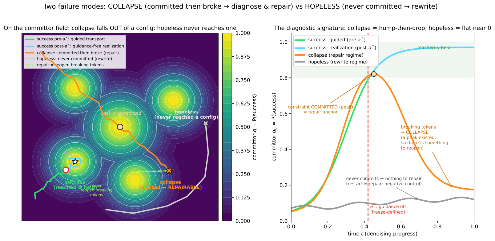
Our contributions are to define CFG necessity through paired continuations from the same partial output, introduce a prompt-specific commitment horizon for removing CFG within a prespecified tolerance, derive a local covariance characterization of CFG’s first-order effect, and show how this framework supports CFG guidance handoff, later parallel decoding, and recovery through reopening.
2 Related Work
Masked diffusion language models. Diffusion language models generate text through iterative denoising, using either continuous representations (Li et al. 2022; Gong et al. 2023) or discrete token corruption (Austin et al. 2021; Lou et al. 2024). Masked and absorbing-state formulations have recently scaled to instruction-following language models (Sahoo et al. 2024; Shi et al. 2024; Nie et al. 2025). We view their reverse process as a sequence of partially decoded states and study the effect of switching future decoding from CFG to the base model.
Guidance in diffusion models. Classifier and classifier-free guidance modify reverse transitions toward a conditioning signal (Dhariwal and Nichol 2021; Ho and Salimans 2022). Prior work improves guidance through geometric corrections, annealing, and adaptive or interval-restricted schedules (Bradley and Nakkiran 2024; Karras et al. 2024; Chung et al. 2024; Hong et al. 2023; Zheng and Lan 2023; Sadat et al. 2024; Sadat et al. 2025; He et al. 2025; Rojas and others 2025; Kynkäänniemi et al. 2024; Wang et al. 2024; Li et al. 2025; Zhou and Van de Cruys 2026), including extensions to discrete diffusion (Schiff et al. 2025; Nisonoff et al. 2024). These methods mainly choose guidance strength or timing at the task or schedule level. We instead ask, for a particular prompt and partial state, whether future CFG still changes terminal constraint success.
Committors and commitment. The committor is the probability of reaching a target set under specified dynamics and is central to transition-path theory and conditioned processes (E and Vanden-Eijnden 2006; E and Vanden-Eijnden 2010). Related ideas have been used in generative modeling through learned -transforms, constrained sampling, and bridge constructions (Didi et al. 2023; Denker et al. 2024; Guo et al. 2026; Wang et al. 2025; Vargas et al. 2023; Zhang and Chen 2021; De Bortoli et al. 2021). We use committors only to measure terminal success from a partial state. The difference between guided and base-continuation committors gives the remaining value of CFG. Unlike work on speciation or coarse-to-fine transitions in continuous diffusion (Raya and Ambrogioni 2023; Biroli et al. 2024; Achilli et al. 2026; Ambrogioni 2023; Sclocchi et al. 2024; Wang and Vastola 2023; Falck et al. 2025; Handke et al. 2026), our commitment horizon is defined directly by the effect of switching future decoding to the base model.
Decoding and constrained generation. Recent dLLM decoders increase parallelism or adapt late-stage schedules (Chen et al. 2025; Shu et al. 2026). We study whether such changes remain compatible with terminal constraint satisfaction after CFG becomes unnecessary, without treating the commitment horizon as a general certificate of parallel safety. Our evaluation also draws on constrained-generation benchmarks covering lexical, structural, and instruction-following constraints (Lin et al. 2020; Yao et al. 2024; Zhou et al. 2023). We use them as controlled settings for measuring guidance necessity across prompts and decoding stages, rather than primarily for ranking generation systems.
3 Setup: Decoding and Guidance Necessity
3.1 Masked Diffusion Decoding and Terminal Success
Fix a prompt and suppress this dependence below. Let denote the partially decoded sequence at step , where is the vocabulary, M is the mask symbol, and is the canvas length. Decoding starts from the fully masked state and ends with a complete output .
Assumption 1 (Markov generation).
Conditioned on the prompt, the reverse process is a first-order Markov chain over partially decoded states:
| (1) | ||||
Its natural filtration is .
This representation is standard for masked-diffusion decoding. If a decoder uses additional history, that history can be included in the state.
A deterministic criterion indicates whether the terminal output satisfies the target constraint, with success set . For a decoding kernel , the prompt-conditioned success rate is
| (2) |
Dataset-level success rates average this quantity over prompts.
3.2 Base and Guided Committors
A committor is the probability of terminal success under a specified future decoding policy. The base committor is
| (3) |
the probability of satisfying the target constraint when all remaining steps use the pure-conditional base decoder, with the prompt retained.
To define the guided policy used below, let and denote the conditional and unconditional logits. CFG with weight uses
where is the guidance direction. Let denote the resulting transition kernel. The guided committor is
| (4) |
the probability of terminal success when CFG remains active for all remaining steps.
3.3 Remaining Guidance Value and the Commitment Horizon
The remaining guidance value
| (5) |
measures the gain in terminal success from keeping CFG active rather than switching immediately to the base decoder. For a switch point , let denote the terminal success probability of using CFG before and the base decoder from onward. Thus, and .
Definition 1 (Commitment horizon).
For tolerance , define
| (6) |
The commitment horizon is the earliest persistent switch point after which removing CFG costs at most in terminal success. If no preterminal switch point satisfies this condition, then and we call the prompt right-censored. Well-definedness and monotonicity in are discussed in Appendix A.5.
Let denote the state reached at time under fully guided decoding. By the Markov property,
Therefore,
| (7) |
Thus, the cost of switching off CFG at time is the average remaining guidance value over states produced by the guided prefix. The horizon is therefore prompt-specific and is defined by changing the future decoding policy.
Estimation.
We estimate committors and the switch curve using repeated continuation rollouts. The estimate is the earliest evaluated switch point that satisfies the tolerance condition at every later grid point. Horizon selection and post-handoff evaluation use disjoint rollout halves through cross-fitting. Rollout counts, switch grids, and tolerance settings are given in Section 5 and Appendix C.
4 When Is Guidance Useful?
4.1 How Guidance Creates Local Lift: Martingales and Covariance
Under Assumption 1, the base committor satisfies a backward harmonic equation.
Theorem 1 (Martingale root).
Under Assumption 1,
| (8) |
with terminal condition . Equivalently,
| (9) |
so is a martingale under the base kernel.
This is the backward equation for terminal success (Appendix A.1). Along a base trajectory, may fluctuate and eventually resolve to or , but its conditional expected increment is zero. The base process therefore provides a zero-drift reference for measuring the effect of guidance.
To measure that effect, let denote the guided kernel at weight , obtained from the CFG logit tilt defined in Section 3.2. The one-step local lift is
| (10) |
It measures how one guided step changes expected success under future base continuation. It is the local counterpart of the remaining guidance value defined in Section 3.3.
Because the guided next-step law is an exponential tilt of the base law, its derivative at satisfies the following linear-response identity (Appendix A.3):
| (11) |
Equation 11 gives the local mechanism by which CFG can help. Guidance increases expected continuation success when its logit direction assigns more probability to successor states with larger base committors. If the guidance direction is unrelated or opposed to successor success, the first-order effect is zero or negative.
For finite but small ,
| (12) |
Thus, Eq. 11 is exact as a derivative at , whereas Eq. 12 is a first-order approximation. Only the component of aligned with the successor committor contributes at first order (Appendix A.4).
For comparison, ideal conditioning through the Doob transform has one-step gain
| (13) |
when (Corollary 3; Appendix A.2). Both results identify variation in successor committor values as the local opportunity for steering. The ideal transform exploits this variation directly, while CFG helps only when its logit tilt aligns with it.
In short, CFG can help by shifting next-step probability toward states with higher future success probability. This is a local, first-order statement; it does not determine how long guidance remains useful or where the commitment horizon occurs.
4.2 When Does Guidance Transport? Failure Modes of the First-Order Law
The covariance in Eq. 11 separates into alignment and two sources of local variation. Let all moments below be taken under , and define
| (14) |
whenever both standard deviations are nonzero. For positive and sufficiently small ,
| (15) |
The first-order effect can fail for three reasons. First, the guidance tilt can collapse: . In this case, is constant over reachable successors, so normalization removes the tilt and for every . The local lift is therefore exactly zero, and is undefined rather than zero.
Second, the success opportunity can collapse: . All reachable successors then have the same base-continuation success probability, so redistributing probability among them cannot change the expected committor. If this condition persists over the remaining continuation, future guidance value vanishes and the commitment horizon is reached.
Third, the guidance direction can be misaligned with continuation success. When , the first-order effect vanishes; when , guidance moves probability toward successors with lower base-continuation success and the first-order effect is negative.
Thus, for , the first-order term is positive exactly when
This is a local statement about one decoding step. It does not require to approximate the committor globally, and it does not determine the commitment horizon by itself. How often positive local transport occurs is empirical; Appendix D finds that it is uncommon and concentrated early in decoding.
The factorization is independent of the particular constraint, but its factors are not. In particular, when successor committor variation disappears depends on the prompt and on the structure of the success set . Section 5 measures this variation across constraint families.
4.3 For How Long? The Commitment Horizon
For readability, we suppress the fixed guidance weight and write for the local lift defined in Eq. 10.
The horizon depends on future transport.
A single local lift does not determine the commitment horizon. By Definition 1, is defined by the effect of switching all remaining decoding to the base kernel, not by a threshold on a one-step statistic.
The local and global quantities are nevertheless linked exactly.
Proposition 1 (Accumulated local transport).
For any state reached at step ,
| (16) |
Combining this identity with Eq. 7 gives
| (17) |
Thus, the cost of switching CFG off at time is exactly the expected future accumulation of local guided transport. A small lift at one step is not enough to certify the horizon, because later lifts may still contribute.
Why future transport can vanish.
By Cauchy–Schwarz and Eq. 11,
| (18) |
with moments under . Hence, guidance has less room to help when reachable successors have similar base-continuation values. Under the base kernel this variation obeys an exact budget that is exhausted as the committor resolves (Corollary 5; Appendix A.5), and the Cauchy–Schwarz cap above is the only bridge we assert between that base-measure budget and guided transport. If this contraction persists, the future sum in Eq. 17 eventually falls within .
What the theory guarantees.
The weak result always holds, since switching at the terminal point has zero cost. The theory does not imply that is early or sharp; those are empirical properties of the decoder and constraint, since the martingale may deposit its variance on any schedule consistent with the budget (Appendix A.6; a worked absorbing-committor example in which both regimes are visible is in Appendix B). It also does not guarantee that wider parallel decoding is safe after , because changing parallelism changes the base kernel (Appendix A.7 bounds the resulting error). We test both questions separately in Section 5.
5 Results
5.1 Guidance Dependence Is Prompt-Specific
We first ask whether guidance dependence is shared by all prompts in a task. We evaluate LLaDA-Instruct (Nie et al. 2025) on 13 subtasks drawn from CommonGen (Lin et al. 2020), IFEval (Zhou et al. 2023), COLLIE (Yao et al. 2024), and our newly constructed Constraint-Controlled Generation (CCG) suite. Each subtask contains prompts, and every prompt is decoded at every grid point, with no sampling and no filtering; we call this exhaustive sweep a census. We use , 64 generated tokens, and 64 denoising steps as the center configuration, and vary one factor at a time (OFAT) around this setting. Success criteria and the full experimental design are given in Appendix H and Appendix C.
Guidance dependence is not uniform within any subtask. Every subtask contains a mixture of prompts that succeed without guidance (born-in), benefit from guidance (needs-CFG), are harmed by guidance (harmful), or fail under both policies (hopeless) (Figure 2).
These results show that task-level success rates hide qualitatively different prompt-level behaviors. We therefore report the full fate mixture and define a nontrivial commitment horizon only for prompts whose success depends on guidance over part of the trajectory. Fluency is evaluated separately: moderate guidance can improve perplexity relative to the unguided model, whereas stronger guidance can degrade it. Full census, OFAT, and fluency results are reported in Appendix C.
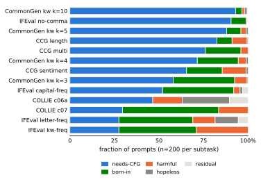
Constraint 约束 |
Full CFG 全程 CFG |
Freeze at 在 a^{*} 时冻结引导 |
Abs. gap 绝对差距 |
95% CI 95% 置信区间 |
Retention 保留率 |
Med. a^{*}/T 中位数 |
(%) | |
|---|---|---|---|---|---|---|---|---|
CommonGen kw CommonGen 关键词 k{=}3 |
200 | 0.828 | 0.819 | -0.009 | 0.99 | 0.22 | 27 | |
CommonGen kw CommonGen 关键词 k{=}4 |
200 | 0.761 | 0.769 | +0.008 | 1.01 | 0.30 | 33 | |
CommonGen kw CommonGen 关键词 k{=}5 |
200 | 0.644 | 0.636 | -0.008 | 0.99 | 0.26 | 49 | |
CommonGen kw CommonGen 关键词 k{=}10 |
200 | 0.762 | 0.750 | -0.012 | 0.98 | 0.39 | 42 | |
CCG length CCG 长度 |
200 | 0.821 | 0.837 | +0.016 | 1.02 | 0.16 | 27 | |
CCG sentiment CCG 情感 |
200 | 0.666 | 0.708 | +0.042 | 1.06 | 0.30 | 46 | |
CCG multi CCG 多约束 |
200 | 0.890 | 0.867 | -0.024 | 0.97 | 0.30 | 18 | |
IFEval kw-freq IFEval 关键词频率 |
200 | 0.935 | 0.964 | +0.029 | 1.03 | 0.22 | 4 | |
IFEval letter-freq IFEval 字母频率 |
200 | 0.696 | 0.684 | -0.012 | 0.98 | 0.22 | 33 | |
IFEval capital-freq IFEval 大写频率 |
200 | 0.737 | 0.739 | +0.002 | 1.00 | 0.42 | 35 | |
IFEval no-comma IFEval 无逗号 |
200 | 0.865 | 0.847 | -0.017 | 0.98 | 0.24 | 24 | |
COLLIE c07 COLLIE c07 |
200 | 0.957 | 0.962 | +0.005 | 1.01 | 0.30 | 10 | |
COLLIE c06a COLLIE c06a |
200 | 0.064 | 0.064 | +0.000 | 1.00 | – | 100 |
Policy 策略 |
Fresh SR 新轨迹成功率 \uparrow |
PPL 困惑度 \downarrow |
Fwd. 前向计算次数 \downarrow | ||
|---|---|---|---|---|---|
Full CFG 全程 CFG |
1 | – | |||
| 4 | |||||
| 8 | |||||
| 16 | |||||
Handoff at
recorded
在已记录的 a^{\!*} 交接 |
1 | – | |||
| 4 | |||||
| 8 | |||||
| 16 |
Pre-anchor 锚点之前 |
Post-peak anchor 峰值后锚点 | ||||||
|---|---|---|---|---|---|---|---|
Selection signal 选择信号 |
Cost 代价 \downarrow |
SR 成功率 \uparrow |
Gain 增益 \uparrow |
PPL 困惑度 \downarrow |
SR 成功率 \uparrow |
Gain 增益 \uparrow |
PPL 困惑度 \downarrow |
No reopen (control) 不重新开启（对照） |
– | 0.23 | – | 195 | 0.20 | – | 185 |
Full committor 完整承诺函数 \Delta q^{0} |
0.39 | +0.16 | 138 | 0.34 | +0.14 | 168 | |
Truncated committor () 截断承诺函数（k{=}8） |
0.41 | +0.18 | 132 | 0.31 | +0.11 | 165 | |
Scorer leave-one-out (no rollout) 评分器留一法（无 rollout） |
0.40 | +0.17 | 147 | 0.30 | +0.10 | 250 | |
Guidance disagreement (no rollout) 引导分歧（无 rollout） |
0.37 | +0.14 | 174 | 0.26 | +0.07 | 193 | |
Commit confidence 提交置信度 |
free 无代价 |
0.38 | +0.15 | 163 | 0.35 | +0.16 | 187 |
Success 成功率 \uparrow |
vs. oracle
相对 oracle 的 \Delta \uparrow |
PPL
困惑度 \downarrow |
Fwd.
前向计算次数 \downarrow | |||
Gate source 门控来源 |
at [95% CI] 在 K{=}8 时 [95% 置信区间] |
|||||
Oracle (rollouts) Oracle a^{\!*}（rollout） |
.773 | .757 | .710 | — | 157 | 43.1 |
Rollout-free gates 不依赖 rollout 的门控 | ||||||
raw 原始 \hat{a}^{*} |
.782 | .772 | .733 | 150 | 46.5 | |
policy 策略门控 |
.857 | .849 | .829 | 142 | 64.6 | |
Per-subtask constant 逐子任务常数 |
.880 | .873 | .855 | 141 | 75.3 | |
5.2 Commitment Is Prompt-Specific and Guidance Value Is Front-Loaded
Commitment happens at different times for different prompts. We estimate each prompt’s horizon from paired freeze interventions at seven normalized generation fractions between and . At each fraction, the prefix is generated with CFG and the continuation with the base kernel. We define as the earliest tested point from which switching remains safe at all later grid points. Prompts that already succeed without guidance are excluded, because they do not have a meaningful handoff point. Prompts that still require guidance at the final tested fraction are kept as unresolved cases rather than assigned . Estimator details, sample counts, and the treatment of these unresolved cases are given in Appendix C.3.
The estimated horizons vary widely across prompts (Figure 3). Changing the constraint shifts the horizon distribution, so is not determined by the noise schedule alone. However, most variation occurs between prompts within the same constraint family: constraint family accounts for only about of the total variation in (). This variation matters in practice. Using each prompt’s cross-fitted outperforms the best single global cut by , , and success points on keywords, length, and sentiment, respectively. We therefore treat as a prompt-level handoff boundary, not as a task-level constant or a predictor of eventual success.
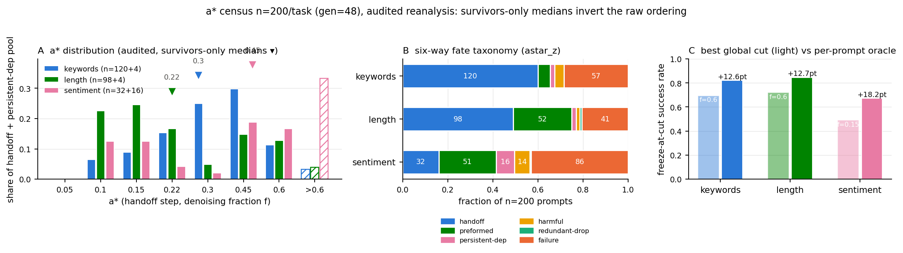
Most of guidance’s benefit is gained before . We switch guidance off at the estimated horizon and let the base model finish. On the full 13-subtask census, the handoff policy is noninferior to full CFG on all 13 subtasks at the prespecified margin (Table 1). By Eq. 17, the switch-off cost is the expected sum of future local transport. A switch curve that remains flat after therefore indicates that this remaining guidance value has fallen below the tolerance.
At the switch, most of the sequence is still masked—, , and of positions at the median horizon on keywords, length, and sentiment, respectively. Thus, constraint success is effectively committed before most tokens are revealed. The freeze curves are reported in Appendix C.3. This plateau concerns terminal constraint success only. Measured separately, freezing does not reduce fluency and improves it in the audited wave (Appendix C). The result shows that guidance adds little after ; it does not mean that guidance was unnecessary before . On CCG sentiment, handoff is strictly better than full CFG, indicating that late guidance can even be harmful. Appendix D provides an auxiliary analysis of why transport weakens after the boundary, but the main result does not depend on that explanation.
5.3 Interventions on a Committed State
After locating the commitment horizon, we study two post-commitment actions. For trajectories with a successful preterminal handoff, we test whether parallel decoding can finish the remaining tokens at low cost. For collapse and hopeless failures, we test whether remasking already filled positions can repair earlier mistakes, since absorbing unmasking cannot revise committed positions (Appendix E).
Parallel realization. Handoff at does not guarantee parallel safety (Proposition 2), so we test the continuation kernel separately with fixed-prefix comparisons and matched gate sweeps. Widening the decoding block before the horizon is costly: moving the gate from one grid step before to gives the largest gain in the sweep ( in constraint success), while each later step adds at most . The parallel-specific versus gap likewise falls from points near to one grid step later; on length constraints it remains below points throughout. Thus, marks the start of a transition to a low-cost parallel regime, typically reached one to two gate intervals later. Table 2 confirms the pattern on fresh rollouts. Increasing from to reduces success by under full CFG but only after handoff. However, wider decoding worsens GPT-2 perplexity relative to under both policies. Parallelism after handoff is therefore less costly in constraint success, but not necessarily in fluency. Full results are in Appendix F.
Repair by reopening. Both failure modes of Figure 1 respond to reopening. Across prompts from subtasks, reopening written positions and resuming guided decoding improves recovery in all eight (anchor type ) cells and in every subtask— on collapse and on hopeless at the earlier anchor—so the gain does not require that the trajectory ever reached a constraint-satisfying configuration (Table 3). Nor does it require identifying a particular position: at the counterfactual-committor and commit-confidence orderings select the same position only – of the time and recover the same amount. What carries the effect is that a committed position is reopened at all. All outcome arms were rerun after we corrected a length-matching artifact; complete design, per-cell results and implementation audits appear in Appendix G.
5.4 A Cheap Is Sufficient
Measuring requires paired rollouts per prompt, but deployment needs only to localize it well enough to choose a gate. We therefore train a rollout-free random forest on confidence, entropy and commit-order features of a prompt’s own run, within subtask. At the induced gate matches the rollout-measured oracle in success— over prompts with a recorded horizon—while using against forward evaluations per sequence (Table 4).
This near-parity despite coarse horizon estimates reflects the success plateau around : modest gate errors usually cost little terminal success. Two qualifications travel with it. The features do not transfer across constraint families—trained leave-one-task-out the pipeline falls to chance—so a deployed gate must stay family-calibrated. And read against the other baseline the comparison runs the other way: a later per-subtask constant cut scores above gating at ( pooled), but it gates later and buys the difference with guided steps, so that contrast states how much guidance a deployment is willing to spend rather than where the boundary lies. CCG sentiment is the main exception to the plateau—the family in which guidance past the horizon is harmful, so the switch curve turns down instead of flattening and the per-prompt location is what a policy must get right. Prediction accuracy, the policy rule, the constant-cut and intention-to-treat comparisons and the matched-budget analysis are in Appendix F.1. Compute is reported throughout as model forward evaluations, descriptively: we make no wall-clock claim and none of a net gain over existing schedulers.
6 Conclusion
Our results support a prompt-specific view of CFG in masked discrete diffusion. Prompts differ in whether they need guidance at all, and, for prompts with an observed preterminal commitment horizon , switching decoding to the base model causes little loss in constraint success. In the settings we study, this horizon is often reached while many positions remain masked, showing that constraint commitment can precede token-level realization.
The theory explains the mechanism but does not locate the horizon. Under the base kernel, the committor is a martingale. CFG changes its predictable drift, with a first-order rate determined by the covariance between the guidance direction and the successor committor. These local lifts accumulate into the remaining value of guidance. However, neither an early horizon nor a later low-cost parallel regime follows from the theory. Both are empirical and depend on the decoder and constraint, and concerns terminal constraint success rather than all aspects of generation quality.
We therefore view as a prompt-specific diagnostic for when CFG can be removed within a tolerance, not as a universal certificate for later decoding changes. Wider parallel decoding must be tested separately. For failed trajectories, reopening written positions improves recovery in both collapse and hopeless failure, with the main benefit coming from restoring revision capacity rather than from a consistent ordering among position selectors. Limitations include the discrete freeze grid, family-specific horizon prediction, and evaluation on a limited set of models and constraints. Overall, CFG is better viewed as an early trajectory corrector than as a mechanism that must remain active until the final decoding step.
References
-
Theory of speciation transitions in diffusion models with general class structure.
arXiv preprint arXiv:2602.04404.
Cited by: §2.
题名译文：具有一般类别结构的扩散模型中物种分化转变的理论
-
The statistical thermodynamics of generative diffusion models: phase transitions, symmetry breaking and critical instability.
arXiv preprint arXiv:2310.17467.
Cited by: §2.
题名译文：生成式扩散模型的统计热力学：相变、对称性破缺与临界不稳定性
-
Structured denoising diffusion models in discrete state-spaces.
In Advances in Neural Information Processing Systems (NeurIPS),
Cited by: §2.
题名译文：离散状态空间中的结构化去噪扩散模型
-
Dynamical regimes of diffusion models.
Nature Communications 15.
Cited by: §2.
题名译文：扩散模型的动力学区间
-
Classifier-free guidance is a predictor-corrector.
In NeurIPS Workshop on Mathematics of Modern Machine Learning (M3L),
Cited by: §2.
题名译文：分类器无关引导是一种预测器—校正器
-
DParallel: learnable parallel decoding for dllms.
arXiv preprint arXiv:2509.26488.
Cited by: §2.
题名译文：DParallel：面向扩散语言模型的可学习并行解码
-
CFG++: manifold-constrained classifier free guidance for diffusion models.
arXiv preprint arXiv:2406.08070.
Cited by: §2.
题名译文：CFG++：扩散模型中受流形约束的分类器无关引导
-
Diffusion schrödinger bridge with applications to score-based generative modeling.
In Advances in Neural Information Processing Systems (NeurIPS),
Cited by: §2.
题名译文：扩散薛定谔桥及其在基于分数的生成建模中的应用
-
DEFT: efficient fine-tuning of diffusion models by learning the generalised -transform.
arXiv preprint arXiv:2406.01781.
Cited by: §2.
题名译文：DEFT：通过学习广义 h 变换高效微调扩散模型
-
Diffusion models beat GANs on image synthesis.
In Advances in Neural Information Processing Systems (NeurIPS),
Cited by: §1,
§2.
题名译文：扩散模型在图像合成上超越 GAN
-
A framework for conditional diffusion modelling with applications in motif scaffolding for protein design.
arXiv preprint arXiv:2312.09236.
Cited by: §2.
题名译文：条件扩散建模框架及其在蛋白质设计基序骨架构建中的应用
-
Towards a theory of transition paths.
Journal of Statistical Physics 123 (3), pp. 503–523.
Cited by: §2.
题名译文：迈向转变路径理论
-
Transition-path theory and path-finding algorithms for the study of rare events.
Annual Review of Physical Chemistry 61, pp. 391–420.
Cited by: §1,
§2.
题名译文：用于研究稀有事件的转变路径理论与寻路算法
-
A fourier space perspective on diffusion models.
arXiv preprint arXiv:2505.11278.
Cited by: §2.
题名译文：从傅里叶空间看扩散模型
-
DiffuSeq: sequence to sequence text generation with diffusion models.
In International Conference on Learning Representations (ICLR),
Cited by: §2.
题名译文：DiffuSeq：使用扩散模型进行序列到序列文本生成
-
Conditional diffusion guidance under hard constraint: a stochastic analysis approach.
arXiv preprint arXiv:2602.05533.
Cited by: §2.
题名译文：硬约束下的条件扩散引导：一种随机分析方法
-
The entropic signature of class speciation in diffusion models.
arXiv preprint arXiv:2602.09651.
Cited by: §2.
题名译文：扩散模型中类别物种分化的熵特征
-
What exactly does guidance do in masked discrete diffusion models.
arXiv preprint arXiv:2506.10971.
Cited by: §1,
§2.
题名译文：引导在掩码离散扩散模型中究竟做了什么
-
Classifier-free diffusion guidance.
arXiv preprint arXiv:2207.12598.
Cited by: §1,
§2.
题名译文：分类器无关扩散引导
-
Improving sample quality of diffusion models using self-attention guidance.
In IEEE/CVF International Conference on Computer Vision (ICCV),
Cited by: §2.
题名译文：使用自注意力引导提升扩散模型的样本质量
-
Guiding a diffusion model with a bad version of itself.
In Advances in Neural Information Processing Systems (NeurIPS),
Cited by: §2.
题名译文：使用自身的劣化版本来引导扩散模型
-
Applying guidance in a limited interval improves sample and distribution quality in diffusion models.
In Advances in Neural Information Processing Systems (NeurIPS),
Cited by: §2.
题名译文：在有限区间内施加引导可提升扩散模型的样本与分布质量
-
Adaptive classifier-free guidance via dynamic low-confidence masking.
arXiv preprint arXiv:2505.20199.
Cited by: §1,
§2.
题名译文：通过动态低置信度掩码实现自适应分类器无关引导
-
Diffusion-LM improves controllable text generation.
In Advances in Neural Information Processing Systems (NeurIPS),
Cited by: §2.
题名译文：Diffusion-LM 改进可控文本生成
-
CommonGen: a constrained text generation challenge for generative commonsense reasoning.
In Findings of EMNLP,
Cited by: §2,
§5.1.
题名译文：CommonGen：面向生成式常识推理的受约束文本生成挑战
-
Discrete diffusion modeling by estimating the ratios of the data distribution.
In International Conference on Machine Learning (ICML),
Cited by: §2.
题名译文：通过估计数据分布比率进行离散扩散建模
-
Large language diffusion models.
arXiv preprint arXiv:2502.09992.
Cited by: §1,
§2,
§5.1.
题名译文：大型语言扩散模型
-
Unlocking guidance for discrete state-space diffusion and flow models.
arXiv preprint arXiv:2406.01572.
Cited by: §2.
题名译文：解锁离散状态空间扩散与流模型的引导机制
-
Spontaneous symmetry breaking in generative diffusion models.
In Advances in Neural Information Processing Systems (NeurIPS),
Cited by: §2.
题名译文：生成式扩散模型中的自发对称性破缺
-
Improving classifier-free guidance in masked diffusion: low-dimensional theoretical insights with high-dimensional impact.
arXiv preprint arXiv:2507.08965.
Cited by: §2.
题名译文：改进掩码扩散中的分类器无关引导：具有高维影响的低维理论洞见
-
CADS: unleashing the diversity of diffusion models through condition-annealed sampling.
In International Conference on Learning Representations (ICLR),
Cited by: §2.
题名译文：CADS：通过条件退火采样释放扩散模型的多样性
-
Eliminating oversaturation and artifacts of high guidance scales in diffusion models.
In International Conference on Learning Representations (ICLR),
Cited by: §2.
题名译文：消除扩散模型在高引导尺度下的过饱和与伪影
-
Simple and effective masked diffusion language models.
In Advances in Neural Information Processing Systems (NeurIPS),
Cited by: §1,
§2.
题名译文：简单而有效的掩码扩散语言模型
-
Simple guidance mechanisms for discrete diffusion models.
In International Conference on Learning Representations (ICLR),
Cited by: §1,
§2.
题名译文：离散扩散模型的简单引导机制
-
A phase transition in diffusion models reveals the hierarchical nature of data.
arXiv preprint arXiv:2402.16991.
Cited by: §2.
题名译文：扩散模型中的一次相变揭示了数据的层次结构
-
Simplified and generalized masked diffusion for discrete data.
In Advances in Neural Information Processing Systems (NeurIPS),
Cited by: §2.
题名译文：面向离散数据的简化与广义掩码扩散
-
Deferred commitment decoding for diffusion language models.
arXiv preprint arXiv:2601.02076.
Cited by: §2.
题名译文：扩散语言模型的延迟承诺解码
-
Denoising diffusion samplers.
In International Conference on Learning Representations (ICLR),
Cited by: §2.
题名译文：去噪扩散采样器
-
Diffusion models generate images like painters: an analytical theory of outline first, details later.
arXiv preprint arXiv:2303.02490.
Cited by: §1,
§2.
题名译文：扩散模型像画家一样生成图像：先轮廓、后细节的解析理论
-
Analysis of classifier-free guidance weight schedulers.
arXiv preprint arXiv:2404.13040.
Cited by: §1,
§2.
题名译文：分类器无关引导权重调度器分析
-
Estimating committor functions via deep adaptive sampling on rare transition paths.
arXiv preprint arXiv:2501.15522.
Cited by: §2.
题名译文：通过稀有转变路径上的深度自适应采样估计承诺函数
-
COLLIE: systematic construction of constrained text generation tasks.
In International Conference on Learning Representations (ICLR),
Cited by: §2,
§5.1.
题名译文：COLLIE：系统构建受约束文本生成任务
-
Path integral sampler: a stochastic control approach for sampling.
arXiv preprint arXiv:2111.15141.
Cited by: §2.
题名译文：路径积分采样器：一种用于采样的随机控制方法
-
Characteristic guidance: non-linear correction for diffusion model at large guidance scale.
arXiv preprint arXiv:2312.07586.
Cited by: §2.
题名译文：特征引导：大引导尺度下扩散模型的非线性校正
-
Guidance is not a hyperparameter: learning dynamic control in diffusion language models.
arXiv preprint arXiv:2605.07701.
Cited by: §1,
§2.
题名译文：引导不是超参数：学习扩散语言模型中的动态控制
-
Instruction-following evaluation for large language models.
arXiv preprint arXiv:2311.07911.
Cited by: §2,
§5.1.
题名译文：大型语言模型的指令遵循评估
Appendix A Transport Theory: Derivations and Technical Qualifications
The body of Section 4 states claims and intuition; this appendix carries the full derivations, the degenerate cases, and the precise scope of each claim. It mirrors the three questions of Section 4: A.1–A.2 ground question 4.1 (what moves the committor), A.3–A.4 make its answer exact and handle degeneracy (feeding 4.2), and A.5–A.6 carry the variance accounting and the weak/strong boundary of 4.3.
A.1 The Martingale Root
Throughout, is the filtration of Assumption 1 and is the terminal success event of Section 3.1, so and the terminal condition of Theorem 1 reads .
Proof of Theorem 1.
The indicator is -measurable. By the tower property and the Markov property (Assumption 1),
which written as a sum over next states is the backward equation . The terminal condition is immediate. Hence and is a -martingale. ∎
Scope. The theorem is a statement about the predictable drift of the base committor under the base next-step law—nothing more. Along individual trajectories fluctuates and, on successful ones, ends at ; the theorem does not say base trajectories cannot succeed, only that the base process cannot manufacture success in expectation.
Corollary 1 (optional stopping).
For any stopping time —in particular any adapted implementation of the handoff rule, capped at the horizon—.
Proof.
is a martingale bounded in and is bounded, so the optional stopping theorem gives . The base process cannot, in expectation, manufacture success it did not already have. ∎
Corollary 2 (recovery identity).
Under the base continuation, the probability of eventual success after an intervention is exactly .
Proof.
Immediate from the definition : setting the state to and continuing under succeeds with probability . This is the interface through which the repairability results of Section 5 are read. ∎
A.2 CFG and the Doob Transform
Validity of the Doob kernel.
With , the kernel sums to one over precisely by the backward equation of Theorem 1, so it is a bona fide kernel wherever .
Corollary 3 (one-step utility of ideal guidance).
For any state with , .
Proof.
The terminal-conditioned (Doob) kernel gives
By Theorem 1, , hence
Centering is free (gauge).
The guided kernel is invariant under : the factor cancels between the numerator and the normalizer. Only the centered direction is physical, so every covariance statement below is automatically centered.
Support caveat (no tilt escape).
The exponential tilt reweights within the support of and assigns zero mass outside it, for every . Guidance can therefore only redistribute probability among next states the base kernel can already reach; it cannot create transitions. Every transport statement in Section 4 is a statement about reweighting on the base support.
A.3 Infinitesimal Transport as a Covariance
Linear-response derivation.
The vocabulary , the canvas length , and the horizon are finite, so every expectation here is a finite sum, below is finite and strictly positive for all , and differentiation under the sum is immediate. We write for the guided kernel at the fixed weight under discussion, dropping the weight index of Section 4.1 except where the -dependence is the object of study; likewise for . Fix a state and write , , all sums over next states weighted by . Let with and , so that . Here is the exponential-family tilt of with natural parameter , sufficient statistic , and normalizer ; thus is a tilted expectation, and the identity below is the standard linear-response fact that the derivative of a tilted mean at is its covariance with the tilt statistic. Then . At : , , , , hence
| (19) |
This derivative identity is exact—it is Eq. 11 of Section 4.1. The same quotient-rule computation at general gives : the transport rate is a covariance at every strength, under the current tilted law; Eq. 11 is its evaluation, and is the exact integral that the body’s first-order law truncates at .
Finite- qualification.
Taylor expansion gives , where is the third joint cumulant of against under (tilted-mean derivatives generate the cumulant hierarchy). The body’s finite- statements use only the first-order term and say so; no claim in Section 4 requires the higher-order terms to vanish. The covariance statement is exact for the rate (Eq. 11) and first-order for at finite (Eq. 12), and we never conflate the two.
A.4 Alignment, Degeneracy, and Failure Modes
Committor-aligned/residual decomposition.
The claim of Section 4.1—that only the committor-aligned part of transports—is an orthogonal projection in , the space of functions of the next state under the base-weighted inner product , which on mean-zero functions equals . Equivalently, it is the -weighted least-squares regression of on . Centering being free (A.2), assume , write , and set the regression coefficient . Split
The residual is orthogonal to the committor,
by the definition of —the defining property of the least-squares residual. By the covariance identity of A.3, , so : replacing by its residual alone would give exactly zero first-order transport. The transport identity sees only through the scalar , so this rank-one projection onto is not a simplification but precisely the information first-order transport depends on. (The split is taken against the committor , not against the conditional direction used by projected-guidance variants, so we deliberately avoid the parallel/perpendicular labels of that construction.)
Alignment score.
In the same geometry, when both spreads are positive, is exactly the cosine of the angle between and under the covariance inner product, so by Cauchy–Schwarz, and the factorized law of Section 4.2 follows by normalizing the covariance identity of A.3 by the two standard deviations.
Degenerate cases.
The factorized form requires both spreads positive; the two collapse modes must be handled separately, and both are stronger than first-order statements:
- •
Tilt collapse, . Then is constant on the support of , the tilt factor cancels in the normalizer, and identically, for every . Transport is exactly zero at all orders, and is undefined (). This mode is not misalignment—there is no direction to be misaligned—and any empirical estimator of must report it as a separate category rather than coerce it to .
倾斜坍塌，\sigma(\delta_{t})=0。此时，\delta_{t} 在 K^{0}_{t}(\cdot\mid x) 的支持集上为常数，倾斜因子 e^{w\delta_{t}} 会在归一化因子中抵消；对任意 w，都严格有 K^{g}_{t}=K^{0}_{t}。所有阶的输运都严格为零，而 \rho_{t} 未定义（0/0）。这种模式不是失配，因为根本没有方向可以失配；任何 \rho_{t} 的经验估计器都必须把它作为单独类别报告，而不能强行赋值为 0。 - •
Outcome collapse, . Then is constant on the support, every reweighting has the same mean, and exactly, for every (by Theorem 1 the constant is ). Nothing is left to steer.
结果坍塌，\sigma(q^{0}_{t+1})=0。此时，q^{\prime} 在支持集上为常数，任意重新加权都具有相同均值；对任意 w，都严格有 \Delta q^{g}_{t}=0（根据定理 1，该常数就是 q^{0}_{t}）。已经没有任何可供引导的空间。
Exhaustiveness.
At first order, transport vanishes iff , and the factorization (valid whenever both spreads are positive, with the two collapse modes exhausting the remaining cases) shows this happens iff , , or ; transport is negative iff both spreads are positive and . This is the complete case analysis behind the iff criterion of Section 4.2.
A.5 Variance Accounting and the Commitment Horizon
Corollary 4 (Doob decomposition and orthogonality).
Write the increment with predictable part and martingale increment . Under , , and the increments are -orthogonal: for .
Proof.
By Theorem 1, , so and . For , since is -measurable and . ∎
Division of labor. Under a guided measure need not vanish, and this is the predictable-drift sense in which transport is guidance-exclusive: the base process contributes only the martingale part, so any predictable drift acquired by is attributable to the guidance intervention, while the variance channel that resolves the committor to or is present under already. Guidance supplies the drift (transport); the model’s own martingale supplies the variance resolution (realization)—with the honest qualifier that the base martingale resolves to success only once is near one, so before commitment it resolves mostly to failure. Under the guided kernel the drift is exactly the local lift of Eq. 10, which is what the next proof accumulates.
Summing that guided-measure predictable drift is exact and gives the accumulation identity of the main text.
Proof of Proposition 1.
Under the guided continuation law the next transition from is , so the predictable part of the base-committor increment is exactly the local lift: . Taking and summing from to telescopes:
| (20) |
where the last line uses the terminal condition , whose expectation under the fully guided continuation from is by definition the guided committor . The identity is exact at every ; no first-order approximation is involved. It lives entirely under the guided law and asserts no relation between the base-measure budget (Corollary 5) and guided transport beyond the Cauchy–Schwarz cap below. ∎
Corollary 5 (variance budget).
.
Proof.
By orthogonality (Corollary 4) and , . Here is deterministic so , and is Bernoulli with mean so . Since has conditional mean zero, . Summing gives the budget. ∎
Optionality closed form.
Combining Corollaries 4 and 5, the total budget decomposes into per-step spends ; the remaining option value at is the Bernoulli-terminal form , which vanishes as or . This is the closed form behind the contraction argument of Section 4.3: what the horizon exhausts is an option value that vanishes once the constraint is decided either way.
The Cauchy–Schwarz cap, and what the budget does not say.
Applying Cauchy–Schwarz to the covariance identity of A.3,
| (21) |
local base committor variance upper-bounds first-order steering value. This inequality is the only bridge we assert between the budget and guided transport. The budget is an identity for the base martingale under the base measure; is defined under the guided tilt; they are not entries in one additive account, and we make no claim that guided transport “spends” base variance step-for-step. What is true, and what Section 4.3 uses, is that the cap and the switch-off cost both collapse when the base committor resolves locally ().
Well-definedness of the interventional horizon.
With the terminal success probability of the process that follows before and from on (Definition 1), is well-defined for every (the set contains ), monotone in (; enlarging the band enlarges the persistent set), and scale-free (it references only terminal success probabilities, never the raw magnitude of a single-step lift). The persistence quantifier matters when is non-monotone: a bare first crossing can precede a later excursion below the band, and every “past ” statement in the paper quantifies over all later switch points; the estimator of Section 5.2 implements exactly this form (the safety condition is required at every later grid point). Prompts with near —and, symmetrically, prompts guidance cannot help, for which is flat at a low level—get because guidance carries no measurable remaining value, not by threshold artifact; prompts for which for all are right-censored at (Section 3.3). This is the population-level object; Section 5 estimates it per prompt by the freeze sweep, with the survivor taxonomy supplying the censoring accounting.
Why no local statistic can replace it.
These three properties are also why Section 4.3 declines to define the horizon by a threshold on . A fixed threshold on the raw lift is not scale-free; it ignores persistence, so it can fire before a later excursion below the band; and it is satisfied vacuously at by any prompt born with near , for which no step transports anything because there is nothing left to steer. The interventional definition is immune to all three by construction, since it references only terminal success probabilities of complete continuation policies.
Ensemble versus state.
Eq. 7 averages the remaining guidance value over the states the guided prefix induces, so is an ensemble statement at the prompt level. Individual realized states reached at the same step may still carry very different ; nothing in the definition or in the freeze estimator claims a per-trajectory horizon, and no result in Section 5 is read at that resolution.
A.6 Weak and Strong Claims, and the CFG–Doob Bridge
Weak existence (derived).
always, since switching off at costs nothing. The nontrivial derived content is the mechanism, not the bare existence: by A.5, the forgone transport after is capped by the remaining outcome-variance profile, so wherever the base committor resolves before , the switch-off cost—and hence —arrives strictly before the schedule ends. Bare existence is nearly trivial and we claim no more for it.
Strong existence (empirical).
That is early and sharp is not derivable from the martingale, which may deposit its variance on any schedule consistent with the budget (the toy model of Appendix B makes this failure of derivability concrete: front-loaded and flat hazards obey the same budget with opposite horizons). The schedule is pinned by the decoder—absorbing unmasking spends committor variance at the steps where constraint-relevant tokens commit, and deployed samplers front-load commitment—which is a structural property of the kernel, measured in Section 5, not a consequence of Assumption 1.
The CFG–Doob bridge.
CFG reweights in logit space by ; the ideal transform reweights in committor space by . The two kernels coincide at state iff for all in the support of , with free of —the two exponents must match token by token, up to the additive gauge the normalizer absorbs (A.2). The weaker reading, that merely be affine in , leaves the slope unpinned and is not sufficient: a slope other than one rescales the tilt and gives a different kernel. Nothing in Section 4 assumes this; the transport identity treats as an arbitrary tilt statistic. Whether is in fact a monotone surrogate for the successor committor is an empirical question—Section 5 measures it in both the base and the guided gauge and finds per-step alignment confined to a sparse, early subset of cells—and by the support caveat of A.2, even a perfectly aligned tilt can only redistribute mass the base kernel already reaches. Whether those sparse early transport events suffice on their own to account for guidance’s end-to-end success gains is a further question that only targeted intervention can settle; the freeze results of Section 5 answer its prefix form (guidance restricted to the pre- prefix recovers full-guidance success), and the cell-level form is answered in the negative by the closure test of Section 5.2: guidance applied only at detected transport steps—or on the event-covering early window—does not recover full-guidance success on most guidance-dependent prompts, and the majority of such prompts show no detectable event at all, in shares matching the tilt-collapse fractions. The detected events are real but insufficient; how the terminal benefit arises from per-step action that is largely committor-orthogonal remains open, and we do not close it by assumption.
A.7 Post-Commitment Stability under Parallel Kernel Substitution
This subsection states the formal counterpart of Section 5.3: handoff safety is definitional, parallel safety is a conditional theorem whose premise is empirical.
Why the second license is not a corollary of the first.
A freeze-safe state need not be parallel-safe. Take the constraint “the output contains exactly one of ”. Sequential base decoding fills one position with and thereafter, conditioned on , never emits : the constraint is committed, is reached, and handoff is safe. Parallel filling draws the two positions from their marginals and can place and together. The committor is flat along every sequentially reachable continuation yet not flat over the product-support states that only parallelism reaches, so whatever safety parallelism enjoys past is a fact about the model’s committor field, not a consequence of the horizon’s definition. This is why the horizon caps only, and the of the bound below must be measured.
Setup.
Group decoding into macro-steps. At macro-step the parallel kernel reveals a block of positions in a single draw from the product of conditional marginals; denotes the time-scale-matched comparison, the -fold composition of the sequential base kernel. Define hybrid policies that apply parallel macro-steps before and sequential macro-steps from on, so is all-sequential and all-parallel, and adjacent hybrids differ in exactly one macro-step. Write for the terminal success probability of continuation policy from state , and for the state distribution at macro-step under the parallel prefix.
Proposition 2 (Two-hop parallel-safety bound).
Fix a state at macro-step . For each let
with the reachable set
where and is the value of the all-sequential continuation. Then
and if in addition the state satisfies the handoff condition (the gap that defines ), then
Proof (hybrid telescoping). . Adjacent hybrids share the parallel prefix—hence the same visited distribution —and the same sequential tail; they differ only in the kernel applied at macro-step . Conditional on the visited state , each policy’s value is the one-step expectation of the common tail value under its own kernel; both expectations lie between the infimum and supremum of that value over , so their difference is at most . Averaging over bounds the -th telescope term by ; summing gives the first bound, and adding the handoff gap gives the second. ∎
Supports and matching.
must contain the union of both supports: flatness on their intersection, or on the sequentially reachable set alone, does not suffice—the counterexample of Section 5.3 lives exactly on product-support states the sequential kernel never visits, which is why alone cannot deliver the conclusion. Position matching ( revealing the same block as ) is not required for validity—the oscillation bound holds for any two kernels supported in —but it makes interpretable, separating the joint-versus-product error from the position-selection error; practical parallel decoders change both at once, and a measured bundles them.
Why flatness rather than total variation.
Since , one also has , and by Pinsker with the residual inter-token coupling . This route is sufficient but strictly stronger: it demands that parallel and sequential agree as distributions over realizations. The data refuse it while satisfying flatness: under post- freezes token identities keep churning far beyond the horizon—identity agreement is still changing up to –, so the kernels stay far apart in total variation—while success and fluency are flat past , i.e., the committor is flat where both kernels land. Their differences are confined to outcome-equivalent states, which is the mathematical content of semantic commitment: what stabilizes at is the outcome level of the field, not the realization distribution—the remaining uncertainty is which successful realization, no longer success or failure. Outcome fidelity, not distributional fidelity, is the operative invariance; this is the formal sense in which the commitment is semantic—the flatness hypothesis permits the realization distribution to move arbitrarily, so long as it moves within a near-outcome-equivalent region.
Estimation.
The proposition is stated at a single state; the empirical program estimates its terms in expectation. The freeze sweep over survivors (Section 5.2) caps ; the two-arm -sweep (Table 2) tests the conclusion directly; and the gate-position sweep of Appendix F measures the premise: the paired same-gate difference between and arms reads out the accumulated interventionally, finding it measurably nonzero at ( points on keywords) and indistinguishable from zero one grid point later. Premise and conclusion are thus verified independently, closing the two-hop argument.
Appendix B Toy Model: an Absorbing-Committor Illustration
This appendix isolates the minimal ingredients the backbone requires—a bounded committor martingale, an absorbing commit event, and a variance budget—in a chain simple enough to inspect by hand. It is a diagnostic illustration of the martingale picture (Section 4), not a generative model of the Transformer trajectory, and makes no claim about CFG dynamics; its role is to show that front-loading is a schedule property, not a consequence of the martingale (the weak/strong distinction of Section 4.3), and that a downstream coordinate’s horizon is set by an upstream commit (feeding Section 5).
A single-coordinate dual-hazard chain.
A constraint coordinate carries a committor observed at steps . At each step, with commit hazard the coordinate absorbs—jumping to with probability and to with probability —and otherwise holds at :
| (22) |
By construction , so is a martingale (a toy instance of Theorem 1) with per-step spent variance . Summing recovers the budget of Corollary 5, , and the remaining option value falls to zero exactly as mass absorbs. The handoff —the step the option value is spent—is therefore set by the shape of : a front-loaded hazard (large early) yields an early, sharp ; a flat hazard yields a late, diffuse one. Both respect the same budget, which is precisely why weak existence is derivable but the early-and-sharp location is not (Section 4.3).
Two-position coupling.
Let coordinate 1 run the chain above, absorbing at time . Coordinate 2’s committor is gated by coordinate 1’s committed value: its initial propensity is high only if coordinate 1 absorbed to success, a one-edge toy-ization of context coupling. Then coordinate 2’s horizon satisfies : withdrawing guidance before reverts the upstream commit and drags coordinate 2 to failure, whereas after coordinate 2 realizes on its own. Thus a coordinate can be pointwise on-track at its own commit yet have its horizon set by an upstream binding time—the mechanism behind the collapse-versus-hopeless repairability of Section 5.
Appendix C Census Estimation: Protocol, Selection Audit, and Cross-Fitted Values
The census at the center configuration. Table 5 gives the per-subtask fate composition summarized by Figure 2, together with the subtask-level success rate at no guidance, at the best weight, and at . Two labellings appear in this paper and are not interchangeable. The four-fate shares here classify a prompt by how its success responds to guidance weight (needs-CFG / born-in / harmful / hopeless); the handoff census used from Section 5.2 onwards instead labels each prompt by whether a freeze point exists at all (handoff / persistent-dependent / failure). COLLIE c06a is the clearest case of the difference: its modal fate is needs-CFG (), while under the handoff labelling it is failure, persistent-dependent and handoff — guidance measurably moves these prompts, and they still never reach a state from which it can be switched off. Table 6 repeats the fate classification on Dream-7B (fate-level only: that sweep carries no freeze branches, so no is estimated for Dream), and Table 7 reports the fluency sweep.
Success rate 成功率 |
Per-prompt fate share (%) 逐提示词归宿占比（%） | |||||||||
|---|---|---|---|---|---|---|---|---|---|---|
Subtask 子任务 |
w_{\text{best}} |
at 在 w_{\text{best}} 时 |
Modal fate 众数归宿 |
needs 需要引导 |
born-in 天生满足 |
harmful 有害 |
hopeless 无望 |
resid. 其余 | ||
CommonGen CommonGen k{=}3 |
0.69 | 0.5 | 0.86 | 0.77 | needs-CFG 需要 CFG |
58 | 34.5 | 7 | 0.5 | – |
CommonGen CommonGen k{=}4 |
0.53 | 0.5 | 0.78 | 0.72 | needs-CFG 需要 CFG |
71.5 | 23 | 4.5 | 1 | – |
CommonGen CommonGen k{=}5 |
0.32 | 1 | 0.66 | 0.60 | needs-CFG 需要 CFG |
88 | 8 | 3 | 1 | – |
CommonGen CommonGen k{=}10 |
0.38 | 2 | 0.73 | 0.63 | needs-CFG 需要 CFG |
93 | 3.5 | 1.5 | 1.5 | 0.5 |
IFEval kw-freq IFEval 关键词频率 |
0.84 | 1 | 0.98 | 0.84 | born-in 天生满足 |
27.5 | 43.5 | 29 | – | – |
IFEval letter-freq IFEval 字母频率 |
0.61 | 2.5 | 0.70 | 0.67 | born-in 天生满足 |
27.5 | 41.5 | 12.5 | 13 | 5.5 |
IFEval capital-freq IFEval 大写频率 |
0.51 | 2 | 0.73 | 0.69 | needs-CFG 需要 CFG |
52 | 40 | 3.5 | 1.5 | 3 |
IFEval no-comma IFEval 无逗号 |
0.49 | 3.5 | 0.89 | 0.88 | needs-CFG 需要 CFG |
90.5 | 8.5 | 0.5 | – | 0.5 |
CCG length CCG 长度 |
0.33 | 0.5 | 0.88 | 0.56 | needs-CFG 需要 CFG |
82.5 | 8.5 | 8.5 | 0.5 | – |
CCG multi CCG 多约束 |
0.60 | 1.5 | 0.87 | 0.79 | needs-CFG 需要 CFG |
76 | 20 | 4 | – | – |
CCG sentiment CCG 情感 |
0.59 | 0.5 | 0.67 | 0.58 | needs-CFG 需要 CFG |
65.5 | 20 | 13.5 | 1 | – |
COLLIE c07 COLLIE c07 |
0.89 | 1 | 0.90 | 0.72 | born-in 天生满足 |
29.5 | 54 | 16.5 | – | – |
COLLIE c06a COLLIE c06a |
0.08 | 1 | 0.14 | 0.01 | needs-CFG 需要 CFG |
46.5 | – | 16.5 | 26.5 | 10.5 |
LLaDA-8B (%) LLaDA-8B（%） |
Dream-7B (%) Dream-7B（%） | |||||||||
|---|---|---|---|---|---|---|---|---|---|---|
Subtask 子任务 |
need 需要引导 |
born 天生满足 |
harm 有害 |
hope 无望 |
res. 其余 |
need 需要引导 |
born 天生满足 |
harm 有害 |
hope 无望 |
res. 其余 |
CommonGen kw CommonGen 关键词 k{=}3 |
58 | 34 | 7 | 0 | 0 | 71 | 16 | 8 | 2 | 4 |
CommonGen kw CommonGen 关键词 k{=}4 |
72 | 23 | 4 | 1 | 0 | 77 | 9 | 9 | 2 | 3 |
CommonGen kw CommonGen 关键词 k{=}5 |
88 | 8 | 3 | 1 | 0 | 78 | 6 | 8 | 6 | 0 |
CommonGen kw CommonGen 关键词 k{=}10 |
93 | 4 | 2 | 2 | 0 | 96 | 4 | 0 | 0 | 0 |
CCG length CCG 长度 |
82 | 8 | 8 | 0 | 0 | 92 | 2 | 6 | 0 | 0 |
CCG sentiment CCG 情感 |
66 | 20 | 14 | 1 | 0 | 64 | 18 | 12 | 4 | 1 |
CCG multi CCG 多约束 |
76 | 20 | 4 | 0 | 0 | 90 | 8 | 3 | 0 | 0 |
IFEval kw-freq IFEval 关键词频率 |
28 | 44 | 29 | 0 | 0 | 35 | 35 | 30 | 0 | 0 |
IFEval letter-freq IFEval 字母频率 |
28 | 42 | 12 | 13 | 6 | 52 | 24 | 12 | 6 | 5 |
IFEval capital-freq IFEval 大写频率 |
52 | 40 | 4 | 2 | 3 | 55 | 25 | 10 | 8 | 2 |
IFEval no-comma IFEval 无逗号 |
90 | 8 | 0 | 0 | 0 | 34 | 66 | 0 | 0 | 0 |
COLLIE c07 COLLIE c07 |
30 | 54 | 16 | 0 | 0 | 28 | 62 | 10 | 0 | 0 |
COLLIE c06a COLLIE c06a |
46 | 0 | 16 | 26 | 10 | 48 | 0 | 24 | 6 | 22 |
All subtasks 全部子任务 |
62 | 23 | 9 | 4 | 2 | 63 | 21 | 10 | 3 | 3 |
Subtask 子任务 |
|||||||||
|---|---|---|---|---|---|---|---|---|---|
CommonGen kw CommonGen 关键词 k{=}3 |
43 | 32 | 37 | 41 | 45 | 59 | 63 | 94 | 124 |
CommonGen kw CommonGen 关键词 k{=}4 |
43 | 35 | 42 | 44 | 52 | 67 | 75 | 91 | 128 |
CommonGen kw CommonGen 关键词 k{=}5 |
38 | 30 | 36 | 43 | 50 | 62 | 77 | 96 | 110 |
CommonGen kw CommonGen 关键词 k{=}10 |
40 | 32 | 37 | 45 | 51 | 61 | 81 | 94 | 128 |
CCG length CCG 长度 |
255 | 121 | 125 | 159 | 257 | 403 | 675 | 1278 | 1364 |
CCG sentiment CCG 情感 |
84 | 31 | 36 | 46 | 53 | 64 | 70 | 92 | 132 |
CCG multi CCG 多约束 |
75 | 35 | 40 | 47 | 55 | 67 | 79 | 89 | 130 |
Subtask 子任务 |
|||||||||
|---|---|---|---|---|---|---|---|---|---|
CommonGen kw CommonGen 关键词 k{=}3 |
0.69 | 0.86 | 0.77 | 0.81 | 0.84 | 0.78 | 0.74 | 0.79 | 0.77 |
CommonGen kw CommonGen 关键词 k{=}4 |
0.53 | 0.78 | 0.70 | 0.73 | 0.74 | 0.72 | 0.67 | 0.69 | 0.72 |
CommonGen kw CommonGen 关键词 k{=}5 |
0.32 | 0.65 | 0.66 | 0.66 | 0.62 | 0.61 | 0.60 | 0.62 | 0.60 |
CommonGen kw CommonGen 关键词 k{=}10 |
0.38 | 0.64 | 0.69 | 0.71 | 0.73 | 0.72 | 0.68 | 0.65 | 0.63 |
CCG length CCG 长度 |
0.33 | 0.88 | 0.79 | 0.77 | 0.81 | 0.76 | 0.69 | 0.65 | 0.57 |
CCG sentiment CCG 情感 |
0.59 | 0.67 | 0.65 | 0.64 | 0.64 | 0.62 | 0.62 | 0.60 | 0.58 |
CCG multi CCG 多约束 |
0.60 | 0.80 | 0.84 | 0.87 | 0.87 | 0.84 | 0.80 | 0.81 | 0.79 |
IFEval kw-freq IFEval 关键词频率 |
0.84 | 0.97 | 0.98 | 0.95 | 0.93 | 0.92 | 0.89 | 0.84 | 0.84 |
IFEval letter-freq IFEval 字母频率 |
0.61 | 0.67 | 0.69 | 0.70 | 0.70 | 0.70 | 0.69 | 0.69 | 0.67 |
IFEval capital-freq IFEval 大写频率 |
0.51 | 0.67 | 0.71 | 0.72 | 0.73 | 0.71 | 0.71 | 0.69 | 0.69 |
IFEval no-comma IFEval 无逗号 |
0.49 | 0.69 | 0.79 | 0.81 | 0.80 | 0.82 | 0.88 | 0.89 | 0.88 |
COLLIE c07 COLLIE c07 |
0.89 | 0.88 | 0.90 | 0.90 | 0.83 | 0.83 | 0.84 | 0.79 | 0.72 |
COLLIE c06a COLLIE c06a |
0.08 | 0.12 | 0.14 | 0.03 | 0.04 | 0.00 | 0.00 | 0.00 | 0.00 |
Full CFG 全程 CFG |
handoff at , then parallel- 在 a^{*} 交接，随后并行 K | |||||||||||
|---|---|---|---|---|---|---|---|---|---|---|---|---|
Subtask 子任务 |
(handoff) n（交接） |
med. [IQR] a^{*} 中位数 [IQR] |
SR 成功率 |
PPL 困惑度 |
SR 成功率 |
PPL 困惑度 |
SR 成功率 |
PPL 困惑度 |
SR 成功率 |
PPL 困惑度 |
SR 成功率 |
PPL 困惑度 |
CommonGen kw CommonGen 关键词 k{=}3 |
78 | 0.30 [0.15, 0.45] | 0.95 | 56 | 0.79 | 50 | 0.80 | 76 | 0.77 | 125 | 0.74 | 261 |
CommonGen kw CommonGen 关键词 k{=}4 |
80 | 0.30 [0.22, 0.45] | 0.91 | 64 | 0.80 | 64 | 0.78 | 72 | 0.76 | 115 | 0.70 | 226 |
CommonGen kw CommonGen 关键词 k{=}5 |
87 | 0.22 [0.15, 0.45] | 0.93 | 54 | 0.75 | 36 | 0.75 | 53 | 0.73 | 83 | 0.69 | 154 |
CommonGen kw CommonGen 关键词 k{=}10 |
108 | 0.45 [0.30, 0.45] | 0.92 | 55 | 0.82 | 40 | 0.79 | 53 | 0.75 | 76 | 0.67 | 135 |
CCG length CCG 长度 |
84 | 0.15 [0.14, 0.30] | 0.96 | 579 | 0.88 | 433 | 0.90 | 466 | 0.89 | 610 | 0.88 | 807 |
CCG sentiment CCG 情感 |
49 | 0.22 [0.10, 0.45] | 0.89 | 180 | 0.82 | 101 | 0.79 | 158 | 0.77 | 204 | 0.72 | 372 |
CCG multi CCG 多约束 |
129 | 0.30 [0.22, 0.45] | 0.95 | 63 | 0.83 | 53 | 0.81 | 76 | 0.77 | 119 | 0.71 | 223 |
IFEval kw-freq IFEval 关键词频率 |
58 | 0.22 [0.15, 0.45] | 0.99 | 41 | 0.88 | 25 | 0.90 | 37 | 0.92 | 59 | 0.89 | 121 |
IFEval letter-freq IFEval 字母频率 |
42 | 0.22 [0.15, 0.30] | 0.99 | 165 | 0.94 | 38 | 0.94 | 56 | 0.94 | 82 | 0.91 | 190 |
IFEval capital-freq IFEval 大写频率 |
35 | 0.30 [0.15, 0.60] | 0.94 | 66 | 0.76 | 40 | 0.73 | 62 | 0.70 | 97 | 0.67 | 192 |
IFEval no-comma IFEval 无逗号 |
147 | 0.22 [0.15, 0.45] | 0.89 | 86 | 0.80 | 43 | 0.82 | 68 | 0.84 | 101 | 0.79 | 211 |
COLLIE c07 COLLIE c07 |
8 | 0.30 [0.30, 0.30] | 0.99 | 206 | 0.98 | 162 | 0.98 | 197 | 0.97 | 340 | 0.94 | 628 |
pooled 合并 |
905 | – | 0.93 | 123 | 0.82 | 85 | 0.82 | 107 | 0.80 | 153 | 0.76 | 264 |
Full CFG 全程 CFG |
Handoff at (ITT) 在 \hat{a}^{*} 交接（ITT） | ||||||||
|---|---|---|---|---|---|---|---|---|---|
Subtask 子任务 |
Coverage 覆盖率 |
||||||||
CommonGen kw CommonGen 关键词 k{=}3 |
0.39 | 0.84 | 0.86 | 0.84 | 0.77 | 0.78 | 0.78 | 0.77 | 0.76 |
CommonGen kw CommonGen 关键词 k{=}4 |
0.40 | 0.74 | 0.80 | 0.75 | 0.72 | 0.69 | 0.69 | 0.68 | 0.66 |
CommonGen kw CommonGen 关键词 k{=}5 |
0.43 | 0.62 | 0.65 | 0.63 | 0.57 | 0.54 | 0.55 | 0.53 | 0.52 |
CommonGen kw CommonGen 关键词 k{=}10 |
0.54 | 0.74 | 0.80 | 0.78 | 0.47 | 0.68 | 0.67 | 0.64 | 0.60 |
CCG length CCG 长度 |
0.42 | 0.81 | 0.56 | 0.38 | 0.26 | 0.78 | 0.79 | 0.79 | 0.78 |
CCG sentiment CCG 情感 |
0.24 | 0.64 | 0.52 | 0.47 | 0.43 | 0.62 | 0.61 | 0.61 | 0.60 |
CCG multi CCG 多约束 |
0.65 | 0.87 | 0.78 | 0.73 | 0.57 | 0.80 | 0.78 | 0.76 | 0.72 |
IFEval kw-freq IFEval 关键词频率 |
0.29 | 0.93 | 0.74 | 0.64 | 0.67 | 0.90 | 0.90 | 0.91 | 0.90 |
IFEval letter-freq IFEval 字母频率 |
0.21 | 0.70 | 0.66 | 0.69 | 0.72 | 0.69 | 0.69 | 0.69 | 0.68 |
IFEval capital-freq IFEval 大写频率 |
0.17 | 0.73 | 0.69 | 0.75 | 0.77 | 0.70 | 0.69 | 0.69 | 0.68 |
IFEval no-comma IFEval 无逗号 |
0.73 | 0.80 | 0.97 | 0.99 | 0.99 | 0.74 | 0.75 | 0.76 | 0.73 |
COLLIE c07 COLLIE c07 |
0.04 | 0.96 | 0.96 | 0.98 | 1.00 | 0.96 | 0.96 | 0.96 | 0.96 |
COLLIE c06a COLLIE c06a |
0.00 | 0.04 | 0.12 | 0.11 | 0.06 | 0.04 | 0.04 | 0.04 | 0.04 |
pooled 合并 |
0.35 | 0.72 | 0.70 | 0.67 | 0.62 | 0.69 | 0.68 | 0.68 | 0.66 |
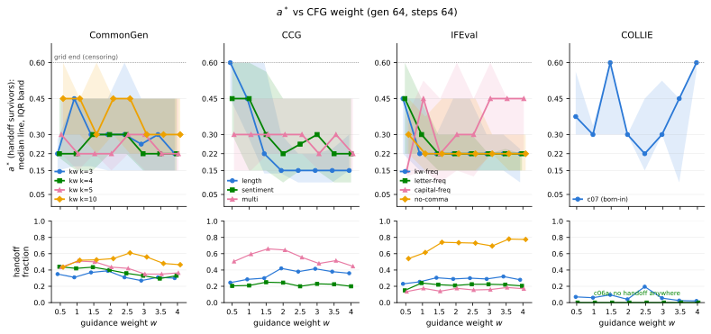
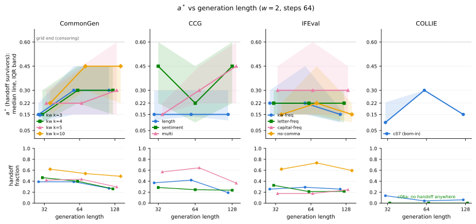
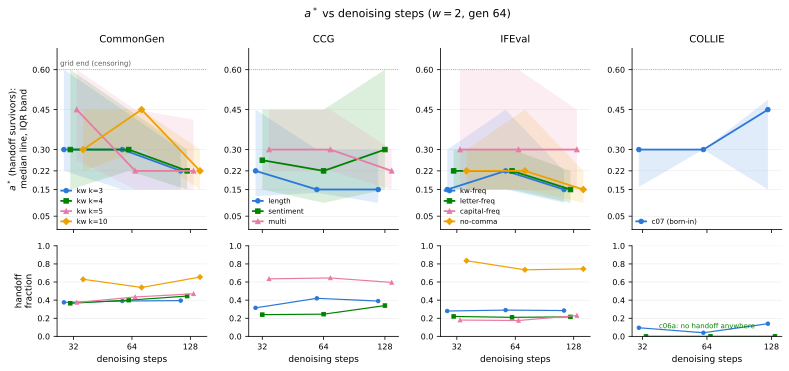
C.1 The Freeze Estimator
Per prompt, one guided trajectory is recorded and its state reconstructed at each grid fraction . From each state we run guidance-free continuations (their terminal success fraction estimates , the freeze-at- outcome) and guided continuations (estimating ), with independent seeds per cell. The horizon estimate is the earliest grid point from which and hold at every later grid point (the persistent form of A.5); the handoff class additionally requires guidance to have helped earlier ( at some prior grid point). Because all freeze branches share the recorded trajectory, the per-prompt is a trajectory-level estimate of the ensemble-averaged horizon defined in Section 3.3, and carries that definition’s caveat: individual realized states can hold very different .
C.2 Post-Selection Optimism and Cross-Fitting
Adding error bars does not correct the selection problem, because the issue is not merely sampling variance at a pre-specified freeze point. The same noisy rollout estimates are used to select the earliest passing point (and, for the oracle of Section 5.2, each prompt’s best-looking point) and to evaluate its apparent performance, inducing post-selection optimism; naive intervals computed after selection do not account for it and can substantially undercover. Averaging over more prompts reduces random variation around the optimistic estimate but does not remove the optimism while the per-candidate rollout budget stays fixed. We therefore separate selection from evaluation by cross-fitting and report uncertainty only on held-out evaluation outcomes.
Rollouts within a cell are i.i.d. with independent seeds across cells, so conditional on a cell’s success count of , a random half-split is exactly hypergeometric: no per-rollout storage is needed to simulate it. Per replicate (), every cell is split into a selection half and an evaluation half; the unchanged taxonomy and selection rules run on the selection half; values are read on the evaluation half; both the per-prompt oracle and the global-cut comparator undergo the same isolation. The selection-versus-evaluation difference at selected points is reported as observed post-selection optimism (an empirical estimate, not the exact bias: both halves carry sampling noise, and 12-rollout selection is noisier than the deployed 24-rollout rule, so the cross-fitted policy value is mildly conservative).
Audited census (48-token budget; plug-in cross-fitted [2.5, 97.5 percentile]): oracle-vs-global gap (keywords), (length), (sentiment); oracle-level optimism points; freeze-at- value on evaluation halves (optimism points). The 64-token wave repeats the pattern: gaps , , ; freeze optimism – points. Cross-fitting corrects selected values, not selected locations; under half-rollout selection the survivors-only medians move by at most one grid point (e.g., keywords-64: plug-in vs ), which bounds the location sensitivity we do not correct.
Prespecification of the noninferiority test. Table 1 reports a test whose margin and estimand were fixed before the contrast was read, and the caption calls the margin prespecified; the protocol is collected here so that claim is checkable in one place. (i) Margin: in absolute success rate, with retained as the sensitivity margin for subgroup analyses. (ii) Primary estimand: the paired handoff-minus-full-CFG difference over the full prompt census of each subtask, with right-censored prompts () kept in the denominator at a paired difference of zero, which is their value by construction. (iii) Selection and evaluation are separated: the switch point is chosen on one half of each cell’s rollouts and both arms are read on the held-out half, so no value is read at the point that selected it. (iv) Uncertainty: percentile bootstrap over prompts as the resampling unit, prompts being the level at which the horizon is defined. (v) Secondary, reported alongside and never in place of the primary: the survivors-only subgroup and the 48-token replication wave, both immediately below. A subtask counts as noninferior when the lower confidence bound exceeds ; this is a per-subtask statement and we make no multiplicity correction across the 13, so “13 of 13” should be read as a description of the table rather than as a single family-wise test.
The noninferiority receipt across waves and subgroups. On the audited 48-token wave the paired handoff-minus-full difference over the full census is (keywords), (length) and (sentiment), so the receipt of Section 5.2 is stable across generation budgets. Restricted to the survivors subgroup—prompts whose selected switch point is strictly earlier than —five of the twelve estimable 64-token subtasks have a lower confidence bound below and therefore miss the primary margin while clearing the sensitivity margin: CommonGen kw , kw , kw , CCG multi and IFEval letter-freq ; COLLIE c06a has no survivors, so the subgroup estimand is undefined there. The two estimands answer different questions and we report both. The primary one is the contrast over the population a switch policy actually meets; the subgroup drops exactly the prompts on which the two policies are identical by construction, so the distance between the two grows with a row’s censoring share (CommonGen kw , censored , moves from to ; CCG multi, censored , from to ).
The handoff arm is not less fluent. The census shards store scalar outcomes and no generated text, so fluency has to be measured by re-decoding. We do that on two waves. (i) On the audited 48-token wave we re-decoded every survivor twice from the same seed—once under full CFG, once freezing at —and scored GPT-2 perplexity on the paired outputs (Table 11): freezing lowers perplexity on all three families, by to in mean per-token NLL, every interval excluding zero. (ii) On the 64-token census of Table 1 itself we rebuilt each handoff survivor’s prefix at from that prompt’s stored commit schedule—a replay, so it costs no forward passes—and re-ran both arms from there under the census seeds (, temperature ), then decoded (Table 12). The replay reproduces the recorded success of both arms exactly on of survivors, so the perplexities are read on the same rollouts whose success the census reports. The paired per-prompt difference in mean NLL per token favours freezing on of the subtasks that have a survivor, from (CCG multi) to (IFEval letter-freq), every interval excluding zero; COLLIE c07 is the single row in the other direction (), and we leave it as an exception rather than read a mechanism off one row. Censored prompts are excluded throughout: they run the same policy in both arms, so their fluency difference is zero by construction. This is the fluency axis of Section 5.1 read at the horizon: sustained guidance past costs fluency without buying success, so the handoff is not a quality-for-success trade.
Family 任务族 |
Full CFG 全程 CFG |
Freeze 在 a^{*} 冻结引导 |
PPL [95% CI] \Delta\log PPL [95% 置信区间] | |
|---|---|---|---|---|
keywords 关键词 |
148 | 60 | 38 | |
length 长度 |
155 | 225 | 111 | |
sentiment 情感 |
116 | 89 | 48 |
Subtask 子任务 |
Full CFG 全程 CFG |
Freeze 冻结引导 |
PPL [95% CI] \Delta\log PPL [95% 置信区间] | |
|---|---|---|---|---|
CommonGen kw CommonGen 关键词 k{=}3 |
151 | 46 | 34 | |
CommonGen kw CommonGen 关键词 k{=}4 |
140 | 50 | 33 | |
CommonGen kw CommonGen 关键词 k{=}5 |
107 | 49 | 32 | |
CommonGen kw CommonGen 关键词 k{=}10 |
125 | 53 | 33 | |
CCG length CCG 长度 |
147 | 228 | 122 | |
CCG sentiment CCG 情感 |
125 | 55 | 35 | |
CCG multi CCG 多约束 |
170 | 55 | 40 | |
IFEval kw-freq IFEval 关键词频率 |
191 | 37 | 20 | |
IFEval letter-freq IFEval 字母频率 |
140 | 89 | 23 | |
IFEval capital-freq IFEval 大写频率 |
140 | 48 | 24 | |
IFEval no-comma IFEval 无逗号 |
164 | 78 | 33 | |
COLLIE c07 COLLIE c07 |
187 | 50 | 64 |
The smallness of the freeze-level optimism ( points) is itself informative: it rules out estimator selection noise as the main source of the -point fresh-rollout deficit of Appendix 17, whose measured decomposition (reference optimism from survivor classification, shared by the control at every gate) is given there.
C.3 The Horizon under the OFAT Grid
The 13-subtask census of Section 5.1 also carries survivors-only at every configuration, which tests whether the three legs of Section 5.2 are artifacts of one operating point (Figure 4). (i) does not track the guidance weight. For the survivors-only median moves by at most one grid point in 11 of 12 subtasks with survivors (the exception, IFEval capital-frequency, has survivors per cell); only starved guidance () completes transport later (length: median at versus at , with correspondingly heavier censoring). The horizon is a property of the prompt–constraint pair, not of the control knob. (ii) scales with the realization budget where the carrier is lexical. Quadrupling generation length (32 to 128) moves the keyword-family medians later (: ; : ; multi-constraint: ) while length control stays at and every IFEval family moves by at most one grid point; the steps axis moves no subtask by more than one grid point in either direction.
Estimator scope, and why the family ordering is not quoted as a constant. All freeze branches of a prompt share a single recorded guided trajectory, so the per-prompt is a trajectory-level estimate; its transfer to fresh rollouts mixes estimation noise with genuine trajectory-to-trajectory variability of the horizon, which Appendix 17 audits directly. The quoted medians are plug-in locations: under half-rollout selection they move by at most one grid point, and the cross-fitting of Section 5.2 corrects the values read at selected points, not the selected locations themselves. The audited three-family census runs a single generation budget (48 tokens), and its survivors-only medians are for sentiment (; 16 further prompts remain guidance-dependent past the grid end and are right-censored), for keywords () and for length (). The naive medians () reverse this order, and the reason is algebraic rather than empirical: since , any prompt born with satisfies a first-crossing rule at the first grid point by construction, so born-in prompts— of sentiment’s saturated set versus of keywords’—are forced to and the naive per-family median becomes a headcount of prompts that never needed guidance rather than a timing. This is why Section 5.2 classifies fates before reading , and reports it over handoff survivors only. At the 64-token budget the ordering reverses again: the keyword family commits latest () and sentiment earlier (). We therefore do not read the between-family ordering as a stable constant of the constraint type. The plug-in oracle-versus-global gaps are points against the cross-fitted ; selecting each prompt’s best-looking grid point inflates the oracle by – points, which is the post-selection optimism the cross-fitting removes.
The freeze curves behind the plateau. Figure 5 draws the switch sweep the noninferiority receipt of Section 5.2 summarizes: terminal success against the freeze time, on handoff survivors, one panel per family. The solid curve is the best-single-global-cut policy family—every survivor switching at the same normalized time—while the star marks the policy the body reports, each prompt switching at its own ; the vertical distance between them at the survivors-median horizon is the oracle-versus-global gap in visual form. Note that the common- curve enters the tolerance band only at –, later than any family’s median : a pooled switch curve smears a distribution of per-prompt horizons and is not a location estimate, which is the same discipline Section 5.3 enforces on the gate sweep.
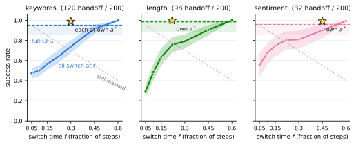
The same axes, read on success and on fluency. Figure 6 completes the OFAT picture by reading the three axes on the two outcome quantities rather than on . Two things it makes visible and the panels cannot. First, the guidance weight buys success only over its first half-unit or so—success is flat to slowly declining past in every subtask—while perplexity keeps climbing over the whole sweep from its minimum at (Table 7), so the two quantities stop moving together well before the end of the axis. Second, on the two budget axes the guided and unguided arms stay separated at every point, i.e. none of the configurations we ran is one where guidance has stopped paying on success—which is what makes the horizon a within-trajectory question rather than a choice of operating point. The two rows come from different waves and are never read as one quantity; see the caption for the per-cell agreement between them on success.
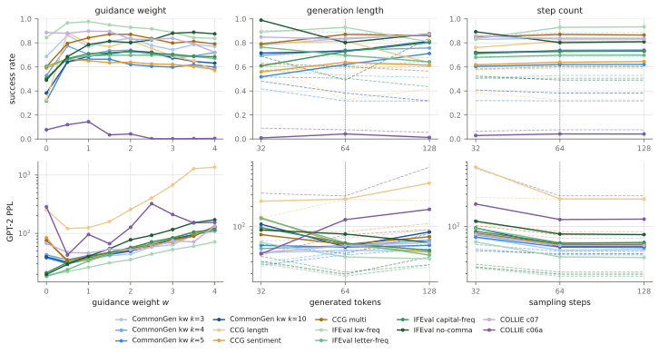
C.4 OFAT-Grid Stability
The OFAT census (Section 5.1 breadth) quotes only fate shares and survivors-only medians—no value is read at a selected point—so its exposure to selection noise is a stability question, not an optimism decomposition. Applying the same hypergeometric half-split machinery (, ) to every cell of the grid (13 subtasks the /generation-length/steps axes; 168 cells with a defined survivor median): fate shares move by at most points of (median interval half-width points), and the survivors-only median stays within one grid point of the plug-in value in cells (). The four exceptions are all small-survivor cells (–; three are the born-in COLLIE family, whose handoff class has ), where a median is fragile for the usual reason. The banding ordering quoted in Section 5.1 is unaffected.
C.5 Per-Configuration Fate Tables
Tables 13–16 report, for every cell of the OFAT census (13 subtasks the /generation-length/steps axes, prompts per cell), the six-way fate counts and the survivors-only median and IQR. Two fates carry no preterminal horizon and are therefore right-censored in the accounting of Table 1: persistent-dependent prompts, still guidance-dependent at the last grid point, and failures, which reach the success threshold under neither policy. A cell’s censoring share is their sum. CommonGen at the center configuration contributes of , the of Table 1.
Fate counts () 归宿计数（n{=}200） |
(survivors) a^{*}（存活者） | ||||||||
|---|---|---|---|---|---|---|---|---|---|
Subtask 子任务 |
pre. 预先形成 |
hand. 交接 |
red. 移除引导仍冗余 |
pers. 持续依赖 |
harm. 有害 |
fail. 失败 |
median 中位数 |
IQR 四分位距 | |
CommonGen kw CommonGen 关键词 k{=}3 |
0.5 | 69 | 70 | 5 | 17 | 1 | 38 | 0.22 | [0.15, 0.28] |
| 1 | 63 | 62 | 1 | 12 | 6 | 56 | 0.45 | [0.17, 0.45] | |
| 1.5 | 59 | 74 | 0 | 13 | 6 | 48 | 0.30 | [0.17, 0.45] | |
| 2 | 62 | 78 | 1 | 4 | 4 | 51 | 0.30 | [0.15, 0.45] | |
| 2.5 | 68 | 62 | 1 | 9 | 3 | 57 | 0.30 | [0.15, 0.60] | |
| 3 | 76 | 54 | 1 | 7 | 2 | 60 | 0.26 | [0.15, 0.45] | |
| 3.5 | 72 | 62 | 1 | 3 | 0 | 62 | 0.30 | [0.15, 0.45] | |
| 4 | 69 | 60 | 1 | 4 | 2 | 64 | 0.22 | [0.15, 0.45] | |
CommonGen kw CommonGen 关键词 k{=}4 |
0.5 | 40 | 88 | 2 | 12 | 6 | 52 | 0.22 | [0.20, 0.45] |
| 1 | 37 | 84 | 2 | 10 | 4 | 63 | 0.22 | [0.15, 0.45] | |
| 1.5 | 37 | 87 | 1 | 7 | 7 | 61 | 0.30 | [0.15, 0.45] | |
| 2 | 48 | 80 | 1 | 6 | 5 | 60 | 0.30 | [0.22, 0.45] | |
| 2.5 | 49 | 72 | 0 | 8 | 1 | 70 | 0.30 | [0.22, 0.45] | |
| 3 | 52 | 66 | 0 | 3 | 6 | 73 | 0.22 | [0.15, 0.45] | |
| 3.5 | 50 | 59 | 0 | 2 | 5 | 84 | 0.22 | [0.15, 0.45] | |
| 4 | 54 | 66 | 0 | 3 | 3 | 74 | 0.22 | [0.15, 0.45] | |
CommonGen kw CommonGen 关键词 k{=}5 |
0.5 | 13 | 87 | 2 | 13 | 0 | 85 | 0.30 | [0.22, 0.45] |
| 1 | 13 | 102 | 1 | 9 | 1 | 74 | 0.22 | [0.15, 0.45] | |
| 1.5 | 15 | 100 | 1 | 7 | 3 | 74 | 0.22 | [0.22, 0.45] | |
| 2 | 12 | 87 | 1 | 6 | 2 | 92 | 0.22 | [0.15, 0.45] | |
| 2.5 | 13 | 84 | 1 | 8 | 5 | 89 | 0.30 | [0.22, 0.45] | |
| 3 | 19 | 70 | 1 | 7 | 5 | 98 | 0.30 | [0.15, 0.45] | |
| 3.5 | 19 | 70 | 1 | 3 | 5 | 102 | 0.22 | [0.15, 0.45] | |
| 4 | 19 | 73 | 1 | 3 | 3 | 101 | 0.22 | [0.15, 0.45] | |
CommonGen kw CommonGen 关键词 k{=}10 |
0.5 | 2 | 87 | 1 | 20 | 1 | 89 | 0.45 | [0.30, 0.60] |
| 1 | 5 | 104 | 1 | 19 | 2 | 69 | 0.45 | [0.30, 0.45] | |
| 1.5 | 5 | 105 | 1 | 7 | 4 | 78 | 0.30 | [0.22, 0.60] | |
| 2 | 4 | 108 | 1 | 9 | 2 | 76 | 0.45 | [0.30, 0.45] | |
| 2.5 | 3 | 122 | 0 | 10 | 7 | 58 | 0.45 | [0.22, 0.45] | |
| 3 | 6 | 112 | 1 | 3 | 9 | 69 | 0.30 | [0.22, 0.45] | |
| 3.5 | 7 | 96 | 2 | 10 | 9 | 76 | 0.30 | [0.22, 0.45] | |
| 4 | 7 | 93 | 0 | 9 | 11 | 80 | 0.30 | [0.22, 0.45] | |
CCG length CCG 长度 |
0.5 | 28 | 49 | 2 | 36 | 1 | 84 | 0.60 | [0.45, 0.60] |
| 1 | 30 | 57 | 2 | 29 | 7 | 75 | 0.45 | [0.30, 0.60] | |
| 1.5 | 47 | 60 | 0 | 15 | 4 | 74 | 0.22 | [0.14, 0.60] | |
| 2 | 53 | 84 | 2 | 9 | 6 | 46 | 0.15 | [0.14, 0.30] | |
| 2.5 | 43 | 76 | 4 | 6 | 11 | 60 | 0.15 | [0.10, 0.22] | |
| 3 | 34 | 83 | 3 | 2 | 21 | 57 | 0.15 | [0.10, 0.22] | |
| 3.5 | 23 | 76 | 2 | 8 | 25 | 66 | 0.15 | [0.10, 0.24] | |
| 4 | 21 | 72 | 8 | 2 | 23 | 74 | 0.15 | [0.15, 0.30] | |
CCG sentiment CCG 情感 |
0.5 | 36 | 41 | 8 | 55 | 10 | 50 | 0.45 | [0.30, 0.60] |
| 1 | 39 | 42 | 2 | 48 | 10 | 59 | 0.45 | [0.15, 0.60] | |
| 1.5 | 32 | 50 | 2 | 32 | 14 | 70 | 0.30 | [0.15, 0.56] | |
| 2 | 32 | 49 | 2 | 32 | 22 | 63 | 0.22 | [0.10, 0.45] | |
| 2.5 | 38 | 40 | 3 | 23 | 25 | 71 | 0.26 | [0.15, 0.45] | |
| 3 | 28 | 46 | 4 | 21 | 27 | 74 | 0.30 | [0.15, 0.45] | |
| 3.5 | 28 | 45 | 5 | 31 | 22 | 69 | 0.22 | [0.10, 0.45] | |
| 4 | 33 | 40 | 2 | 27 | 26 | 72 | 0.22 | [0.10, 0.45] | |
CCG multi CCG 多约束 |
0.5 | 21 | 101 | 2 | 16 | 2 | 58 | 0.30 | [0.15, 0.45] |
| 1 | 35 | 119 | 3 | 5 | 2 | 36 | 0.30 | [0.15, 0.45] | |
| 1.5 | 27 | 132 | 1 | 2 | 3 | 35 | 0.30 | [0.22, 0.45] | |
| 2 | 30 | 129 | 1 | 3 | 3 | 34 | 0.30 | [0.22, 0.45] | |
| 2.5 | 36 | 111 | 0 | 6 | 7 | 40 | 0.30 | [0.22, 0.45] | |
| 3 | 46 | 96 | 2 | 8 | 8 | 40 | 0.22 | [0.15, 0.45] | |
| 3.5 | 42 | 103 | 1 | 4 | 5 | 45 | 0.30 | [0.15, 0.45] | |
| 4 | 40 | 89 | 0 | 3 | 9 | 59 | 0.22 | [0.15, 0.45] | |
Fate counts () 归宿计数（n{=}200） |
(survivors) a^{*}（存活者） | ||||||||
Subtask 子任务 |
pre. 预先形成 |
hand. 交接 |
red. 移除引导仍冗余 |
pers. 持续依赖 |
harm. 有害 |
fail. 失败 |
median 中位数 |
IQR 四分位距 | |
IFEval kw-freq IFEval 关键词频率 |
0.5 | 138 | 46 | 0 | 3 | 0 | 13 | 0.45 | [0.22, 0.45] |
| 1 | 135 | 51 | 0 | 4 | 5 | 5 | 0.22 | [0.15, 0.45] | |
| 1.5 | 121 | 61 | 0 | 2 | 13 | 3 | 0.22 | [0.15, 0.30] | |
| 2 | 110 | 58 | 1 | 0 | 22 | 9 | 0.22 | [0.15, 0.45] | |
| 2.5 | 100 | 60 | 0 | 1 | 31 | 8 | 0.22 | [0.15, 0.45] | |
| 3 | 92 | 58 | 0 | 2 | 31 | 17 | 0.22 | [0.15, 0.30] | |
| 3.5 | 78 | 64 | 0 | 0 | 40 | 18 | 0.22 | [0.15, 0.30] | |
| 4 | 78 | 56 | 1 | 2 | 44 | 19 | 0.22 | [0.10, 0.24] | |
IFEval letter-freq IFEval 字母频率 |
0.5 | 87 | 30 | 2 | 11 | 0 | 70 | 0.45 | [0.22, 0.60] |
| 1 | 87 | 48 | 0 | 4 | 1 | 60 | 0.30 | [0.22, 0.45] | |
| 1.5 | 88 | 44 | 0 | 4 | 1 | 63 | 0.22 | [0.15, 0.30] | |
| 2 | 90 | 42 | 0 | 10 | 1 | 57 | 0.22 | [0.15, 0.30] | |
| 2.5 | 91 | 45 | 0 | 4 | 0 | 60 | 0.22 | [0.15, 0.30] | |
| 3 | 89 | 45 | 0 | 4 | 2 | 60 | 0.22 | [0.15, 0.22] | |
| 3.5 | 85 | 44 | 1 | 5 | 6 | 59 | 0.22 | [0.15, 0.24] | |
| 4 | 82 | 41 | 0 | 5 | 8 | 64 | 0.22 | [0.15, 0.22] | |
IFEval capital-freq IFEval 大写频率 |
0.5 | 89 | 27 | 2 | 7 | 0 | 75 | 0.15 | [0.12, 0.38] |
| 1 | 88 | 35 | 1 | 17 | 0 | 59 | 0.45 | [0.15, 0.53] | |
| 1.5 | 89 | 28 | 2 | 14 | 2 | 65 | 0.22 | [0.10, 0.45] | |
| 2 | 90 | 35 | 2 | 10 | 4 | 59 | 0.30 | [0.15, 0.60] | |
| 2.5 | 86 | 31 | 1 | 15 | 2 | 65 | 0.30 | [0.12, 0.45] | |
| 3 | 86 | 32 | 2 | 8 | 1 | 71 | 0.45 | [0.22, 0.60] | |
| 3.5 | 86 | 37 | 0 | 6 | 0 | 71 | 0.45 | [0.22, 0.45] | |
| 4 | 84 | 34 | 0 | 14 | 3 | 65 | 0.45 | [0.22, 0.45] | |
IFEval no-comma IFEval 无逗号 |
0.5 | 3 | 108 | 2 | 30 | 0 | 57 | 0.30 | [0.22, 0.45] |
| 1 | 2 | 123 | 0 | 27 | 0 | 48 | 0.22 | [0.15, 0.38] | |
| 1.5 | 2 | 148 | 0 | 11 | 0 | 39 | 0.22 | [0.15, 0.45] | |
| 2 | 2 | 147 | 2 | 8 | 1 | 40 | 0.22 | [0.15, 0.45] | |
| 2.5 | 5 | 146 | 3 | 15 | 1 | 30 | 0.22 | [0.15, 0.45] | |
| 3 | 6 | 139 | 2 | 20 | 5 | 28 | 0.22 | [0.22, 0.30] | |
| 3.5 | 6 | 156 | 2 | 17 | 1 | 18 | 0.22 | [0.15, 0.30] | |
| 4 | 5 | 155 | 2 | 17 | 7 | 14 | 0.22 | [0.15, 0.30] | |
COLLIE c07 COLLIE c07 |
0.5 | 172 | 14 | 3 | 10 | 0 | 1 | 0.38 | [0.30, 0.56] |
| 1 | 169 | 12 | 3 | 11 | 0 | 5 | 0.30 | [0.30, 0.34] | |
| 1.5 | 164 | 19 | 1 | 7 | 0 | 9 | 0.60 | [0.30, 0.60] | |
| 2 | 163 | 8 | 2 | 15 | 5 | 7 | 0.30 | [0.30, 0.30] | |
| 2.5 | 140 | 39 | 0 | 3 | 15 | 3 | 0.22 | [0.15, 0.45] | |
| 3 | 178 | 11 | 1 | 0 | 0 | 10 | 0.30 | [0.30, 0.53] | |
| 3.5 | 181 | 5 | 1 | 5 | 0 | 8 | 0.45 | [0.10, 0.45] | |
| 4 | 165 | 4 | 0 | 8 | 16 | 7 | 0.60 | [0.56, 0.60] | |
COLLIE c06a COLLIE c06a |
0.5 | 0 | 0 | 0 | 0 | 0 | 200 | – | – |
| 1 | 0 | 0 | 0 | 25 | 0 | 175 | – | – | |
| 1.5 | 0 | 0 | 0 | 25 | 0 | 175 | – | – | |
| 2 | 0 | 0 | 0 | 20 | 0 | 180 | – | – | |
| 2.5 | 0 | 0 | 0 | 0 | 0 | 200 | – | – | |
| 3 | 0 | 0 | 0 | 0 | 0 | 200 | – | – | |
| 3.5 | 0 | 0 | 0 | 0 | 0 | 200 | – | – | |
| 4 | 0 | 0 | 0 | 0 | 0 | 200 | – | – | |
Fate counts () 归宿计数（n{=}200） |
(survivors) a^{*}（存活者） | ||||||||
Subtask 子任务 |
gen 生成长度 |
pre. 预先形成 |
hand. 交接 |
red. 移除引导仍冗余 |
pers. 持续依赖 |
harm. 有害 |
fail. 失败 |
median 中位数 |
IQR 四分位距 |
CommonGen kw CommonGen 关键词 k{=}3 |
32 | 69 | 78 | 3 | 0 | 4 | 46 | 0.15 | [0.10, 0.22] |
| 64 | 62 | 78 | 1 | 4 | 4 | 51 | 0.30 | [0.15, 0.45] | |
| 128 | 65 | 54 | 0 | 30 | 2 | 49 | 0.30 | [0.15, 0.45] | |
CommonGen kw CommonGen 关键词 k{=}4 |
32 | 44 | 93 | 2 | 0 | 4 | 57 | 0.15 | [0.10, 0.30] |
| 64 | 48 | 80 | 1 | 6 | 5 | 60 | 0.30 | [0.22, 0.45] | |
| 128 | 43 | 52 | 2 | 27 | 5 | 71 | 0.30 | [0.15, 0.45] | |
CommonGen kw CommonGen 关键词 k{=}5 |
32 | 23 | 84 | 1 | 0 | 4 | 88 | 0.22 | [0.15, 0.30] |
| 64 | 12 | 87 | 1 | 6 | 2 | 92 | 0.22 | [0.15, 0.45] | |
| 128 | 18 | 59 | 3 | 21 | 4 | 95 | 0.30 | [0.15, 0.60] | |
CommonGen kw CommonGen 关键词 k{=}10 |
32 | 17 | 124 | 0 | 0 | 3 | 56 | 0.22 | [0.15, 0.30] |
| 64 | 4 | 108 | 1 | 9 | 2 | 76 | 0.45 | [0.30, 0.45] | |
| 128 | 3 | 98 | 0 | 27 | 1 | 71 | 0.45 | [0.22, 0.45] | |
CCG length CCG 长度 |
32 | 86 | 74 | 0 | 0 | 5 | 35 | 0.15 | [0.11, 0.30] |
| 64 | 53 | 84 | 2 | 9 | 6 | 46 | 0.15 | [0.14, 0.30] | |
| 128 | 54 | 38 | 1 | 10 | 36 | 61 | 0.15 | [0.11, 0.30] | |
CCG sentiment CCG 情感 |
32 | 41 | 57 | 3 | 0 | 11 | 88 | 0.45 | [0.22, 0.60] |
| 64 | 32 | 49 | 2 | 32 | 22 | 63 | 0.22 | [0.10, 0.45] | |
| 128 | 22 | 47 | 3 | 40 | 13 | 75 | 0.45 | [0.22, 0.60] | |
CCG multi CCG 多约束 |
32 | 38 | 114 | 0 | 0 | 6 | 42 | 0.15 | [0.15, 0.22] |
| 64 | 30 | 129 | 1 | 3 | 3 | 34 | 0.30 | [0.22, 0.45] | |
| 128 | 19 | 73 | 4 | 42 | 3 | 59 | 0.45 | [0.22, 0.60] | |
IFEval kw-freq IFEval 关键词频率 |
32 | 111 | 51 | 0 | 0 | 15 | 23 | 0.22 | [0.15, 0.30] |
| 64 | 110 | 58 | 1 | 0 | 22 | 9 | 0.22 | [0.15, 0.45] | |
| 128 | 67 | 51 | 1 | 2 | 58 | 21 | 0.15 | [0.10, 0.18] | |
IFEval letter-freq IFEval 字母频率 |
32 | 79 | 65 | 1 | 0 | 7 | 48 | 0.22 | [0.15, 0.30] |
| 64 | 90 | 42 | 0 | 10 | 1 | 57 | 0.22 | [0.15, 0.30] | |
| 128 | 74 | 43 | 0 | 4 | 9 | 70 | 0.22 | [0.10, 0.30] | |
IFEval capital-freq IFEval 大写频率 |
32 | 84 | 35 | 1 | 0 | 3 | 77 | 0.30 | [0.15, 0.45] |
| 64 | 90 | 35 | 2 | 10 | 4 | 59 | 0.30 | [0.15, 0.60] | |
| 128 | 88 | 49 | 0 | 10 | 3 | 50 | 0.30 | [0.15, 0.45] | |
IFEval no-comma IFEval 无逗号 |
32 | 69 | 124 | 2 | 0 | 0 | 5 | 0.15 | [0.15, 0.22] |
| 64 | 2 | 147 | 2 | 8 | 1 | 40 | 0.22 | [0.15, 0.45] | |
| 128 | 40 | 119 | 3 | 4 | 4 | 30 | 0.15 | [0.10, 0.22] | |
COLLIE c07 COLLIE c07 |
32 | 159 | 27 | 1 | 0 | 0 | 13 | 0.10 | [0.10, 0.22] |
| 64 | 163 | 8 | 2 | 15 | 5 | 7 | 0.30 | [0.30, 0.30] | |
| 128 | 166 | 12 | 0 | 13 | 4 | 5 | 0.15 | [0.15, 0.15] | |
COLLIE c06a COLLIE c06a |
32 | 0 | 0 | 0 | 0 | 0 | 200 | – | – |
| 64 | 0 | 0 | 0 | 20 | 0 | 180 | – | – | |
| 128 | 0 | 0 | 0 | 20 | 0 | 180 | – | – | |
Fate counts () 归宿计数（n{=}200） |
(survivors) a^{*}（存活者） | ||||||||
Subtask 子任务 |
steps 步数 |
pre. 预先形成 |
hand. 交接 |
red. 移除引导仍冗余 |
pers. 持续依赖 |
harm. 有害 |
fail. 失败 |
median 中位数 |
IQR 四分位距 |
CommonGen kw CommonGen 关键词 k{=}3 |
32 | 63 | 75 | 0 | 8 | 1 | 53 | 0.30 | [0.22, 0.60] |
| 64 | 62 | 78 | 1 | 4 | 4 | 51 | 0.30 | [0.15, 0.45] | |
| 128 | 80 | 79 | 0 | 0 | 5 | 36 | 0.22 | [0.15, 0.30] | |
CommonGen kw CommonGen 关键词 k{=}4 |
32 | 35 | 73 | 2 | 7 | 10 | 73 | 0.30 | [0.15, 0.60] |
| 64 | 48 | 80 | 1 | 6 | 5 | 60 | 0.30 | [0.22, 0.45] | |
| 128 | 55 | 89 | 1 | 0 | 10 | 45 | 0.22 | [0.15, 0.30] | |
CommonGen kw CommonGen 关键词 k{=}5 |
32 | 12 | 75 | 2 | 4 | 3 | 104 | 0.45 | [0.26, 0.60] |
| 64 | 12 | 87 | 1 | 6 | 2 | 92 | 0.22 | [0.15, 0.45] | |
| 128 | 29 | 94 | 0 | 0 | 2 | 75 | 0.22 | [0.15, 0.41] | |
CommonGen kw CommonGen 关键词 k{=}10 |
32 | 2 | 126 | 2 | 7 | 7 | 56 | 0.30 | [0.22, 0.45] |
| 64 | 4 | 108 | 1 | 9 | 2 | 76 | 0.45 | [0.30, 0.45] | |
| 128 | 10 | 131 | 0 | 0 | 1 | 58 | 0.22 | [0.15, 0.30] | |
CCG length CCG 长度 |
32 | 51 | 63 | 1 | 8 | 17 | 60 | 0.22 | [0.12, 0.45] |
| 64 | 53 | 84 | 2 | 9 | 6 | 46 | 0.15 | [0.14, 0.30] | |
| 128 | 73 | 78 | 2 | 0 | 4 | 43 | 0.15 | [0.10, 0.30] | |
CCG sentiment CCG 情感 |
32 | 25 | 48 | 8 | 30 | 19 | 70 | 0.26 | [0.15, 0.45] |
| 64 | 32 | 49 | 2 | 32 | 22 | 63 | 0.22 | [0.10, 0.45] | |
| 128 | 43 | 68 | 3 | 0 | 24 | 62 | 0.30 | [0.15, 0.60] | |
CCG multi CCG 多约束 |
32 | 24 | 127 | 2 | 2 | 1 | 44 | 0.30 | [0.22, 0.45] |
| 64 | 30 | 129 | 1 | 3 | 3 | 34 | 0.30 | [0.22, 0.45] | |
| 128 | 49 | 119 | 2 | 0 | 4 | 26 | 0.22 | [0.15, 0.30] | |
IFEval kw-freq IFEval 关键词频率 |
32 | 75 | 56 | 1 | 3 | 44 | 21 | 0.15 | [0.15, 0.30] |
| 64 | 110 | 58 | 1 | 0 | 22 | 9 | 0.22 | [0.15, 0.45] | |
| 128 | 111 | 57 | 0 | 0 | 20 | 12 | 0.15 | [0.10, 0.22] | |
IFEval letter-freq IFEval 字母频率 |
32 | 81 | 44 | 0 | 3 | 7 | 65 | 0.22 | [0.15, 0.30] |
| 64 | 90 | 42 | 0 | 10 | 1 | 57 | 0.22 | [0.15, 0.30] | |
| 128 | 94 | 43 | 1 | 0 | 0 | 62 | 0.15 | [0.10, 0.22] | |
IFEval capital-freq IFEval 大写频率 |
32 | 89 | 36 | 1 | 15 | 0 | 59 | 0.30 | [0.15, 0.60] |
| 64 | 90 | 35 | 2 | 10 | 4 | 59 | 0.30 | [0.15, 0.60] | |
| 128 | 95 | 46 | 1 | 0 | 8 | 50 | 0.30 | [0.15, 0.45] | |
IFEval no-comma IFEval 无逗号 |
32 | 8 | 167 | 0 | 9 | 0 | 16 | 0.22 | [0.15, 0.30] |
| 64 | 2 | 147 | 2 | 8 | 1 | 40 | 0.22 | [0.15, 0.45] | |
| 128 | 10 | 149 | 1 | 0 | 2 | 38 | 0.15 | [0.10, 0.22] | |
COLLIE c07 COLLIE c07 |
32 | 167 | 19 | 0 | 4 | 1 | 9 | 0.30 | [0.16, 0.30] |
| 64 | 163 | 8 | 2 | 15 | 5 | 7 | 0.30 | [0.30, 0.30] | |
| 128 | 164 | 28 | 0 | 0 | 0 | 8 | 0.45 | [0.15, 0.49] | |
COLLIE c06a COLLIE c06a |
32 | 0 | 0 | 0 | 0 | 0 | 200 | – | – |
| 64 | 0 | 0 | 0 | 20 | 0 | 180 | – | – | |
| 128 | 0 | 0 | 1 | 0 | 26 | 173 | – | – | |
Appendix D Where the First-Order Transport Law Goes Quiet
Section 5.2 shows that guidance stops buying success past and defers to this appendix the question of why local transport goes quiet there. The answer below is partial, and we state the limit explicitly: the diagnostics identify which factor of the transport law switches off, and they do not identify the channel through which guidance’s terminal benefit arrives. No claim in the body rests on this section.
The first-order transport law of Section 4 identifies which factor switches off where guidance stops moving the committor. This is an account of local transport only; it is not a decomposition of the terminal success benefit.
Design.
The dual-gauge census records, at each measured step of a guidance-dependent cell, whether the step exhibits positive first-order transport and, when it does not, which factor of
switches off. Tilt collapse occurs when : the tilt is constant over reachable successors, so normalization removes the token-level tilt and the conditional guided kernel equals the conditional base kernel. Outcome collapse occurs when but : every reachable successor has the same base-continuation value, so redistributing probability among them cannot change the expected committor. The common value need not be near or . Mis- or anti-alignment occurs when both standard deviations are positive but , so the tilt is orthogonal to or opposed to higher continuation value.
The categories are defined hierarchically because is undefined when either standard deviation vanishes. The implementation first assigns tilt collapse, then outcome collapse, and then mis- or anti-alignment. Thus, the doubly degenerate case is assigned to tilt collapse. The implementation uses exact zero tests rather than tuned thresholds. This rule makes the reported categories exhaustive and mutually exclusive among non-transporting measured steps, so their shares stack over normalized time.
Where the law goes quiet.
Stacking the shares shows that the dominant mode is tilt collapse, and that it dominates precisely on the prompts where guidance is most valuable (Figure 7): its time-marginal reaches on length, on sentiment, and on keywords. The reading is that local transport is sparse—most steps of a guidance-dependent trajectory carry no first-order transport at all, because guided and base kernels have already converged at that state—not that guidance is inactive over the trajectory as a whole. These diagnostics identify which factor suppresses first-order transport at each stage; they do not license the stronger statement that the three modes account for the terminal benefit, and the closure test below is the direct test of why not.
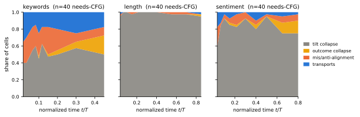
Detected events do not suffice: an attribution gap.
The plateau of Section 5.2 establishes that the pre- prefix of guidance is sufficient; a four-arm closure test asks whether the sparse transport events detected within that prefix are. On common seeds we compare full guidance, no guidance, guidance applied only at detected event steps, and guidance on the event-covering early window (three carriers, rollouts per arm; exploratory, so per-prompt rates are coarse). The answer is no, twice over. First, on the majority of guidance-dependent prompts the detector finds no transport event at all— on length, on sentiment, on keywords—shares that track the tilt-collapse fractions measured independently by the dual-gauge census (), so exactly where guidance matters most, event-anchored intervention is impossible by construction. Second, where events are detected, event-scheduled guidance recovers only of the full-versus-base success gap (keywords), and the event-anchored window arm is no better under paired comparison. We report this as an attribution gap, not as a mechanism: guidance’s terminal benefit is carried more diffusely than any set of transport events our measurement grid detects. In particular, we do not attribute the benefit to the committor-orthogonal remainder of —higher-order, multi-step, or support-shifting channels are all consistent with the data, and distinguishing them would require intervention evidence we do not have. The honest summary is therefore two-sided: the covariance law tells us where first-order transport is available and which factor removes it, and it does not tell us through which channel the terminal benefit arrives.
Appendix E Commitment Is Not Carried by a Fixed Token Position
This appendix rules out a trivial interpretation of , namely that it only records when a particular token is revealed. It also establishes the premise used in Section 5.3: under absorbing unmasking, an already written position cannot be repaired in place without reopening.
For keyword constraints, commitment is consistent with a semantic set of valid realizations rather than with one fixed token identity or position. We test this by destroying an already revealed keyword occurrence and asking whether the constraint can still be realized elsewhere. This provides evidence for a distributed macrostate while separating outcome commitment from the reveal time of one token.
Design.
We use prompts, each with one successful full-guidance trajectory. For each trajectory, we identify one required single-token keyword and the step at which that occurrence is fully revealed. At a matched later time, , we apply one of two interventions and run one deterministic continuation per arm at temperature , using the same schedule and position-selection rule across arms.
Lesion replaces the revealed keyword token with a committed competitor token. Under absorbing unmasking, that position is never reconsidered, so the original occurrence cannot recover in place. Reopen masks the keyword position and allows the model to sample it again. Each intervention is followed by either full guidance or pure-conditional continuation. Matched controls apply the same operations to committed non-keyword positions selected by reveal time, confidence, or at random. We measure restoration at the intervened position, keyword presence anywhere in the final output, and final keyword count.
Findings.
The lesioned position never recovers in place under either continuation policy (span restoration ), as required by the absorbing kernel. Nevertheless, the required keyword reappears elsewhere in of guided continuations and of pure-conditional continuations, with mean final counts of and , respectively. Thus, destroying one revealed occurrence does not usually destroy the constraint.
This result is not explained by an incomplete lesion. Every target keyword is a single token, and the injected competitor remains at the intervened position in every lesion continuation. It is also not explained by a pre-existing duplicate. Among the prompts whose baseline output contains exactly one keyword occurrence, final keyword presence remains under guidance and under pure-conditional continuation. The re-formed keyword appears a median of about words from the intervened position.
Reopening restores the keyword at the original position in of guided continuations and of pure-conditional continuations. Overall keyword presence reaches and , respectively. Applying the same interventions to matched non-keyword positions leaves keyword presence at , ruling out a generic effect of replacement or reopening on the constraint.
The similar relocation rates under guided and pure-conditional continuation are informative. They show that alternative keyword realization is largely a property of the conditional decoding dynamics rather than an effect sustained only by CFG. The constraint is therefore not carried by the identity or location of one written token. When one occurrence is destroyed, the decoder can realize the same keyword constraint through another token configuration.
At the same time, the original position cannot repair itself under absorbing dynamics. Reopening restores revision capacity at that position, which is the mechanistic premise of the intervention in Section 5.3.
We use this result as evidence for a multi-basin keyword geometry, meaning that the success set contains multiple position-equivalent realizations. Length and sentiment constraints do not admit the same localized intervention, so their descriptions as a global counter or closure band and a stiff semantic axis are used only as a descriptive framework in Section 5.3 and Appendix F.
Appendix F The Gate Sweep and the Width Axis
This appendix backs the parallel half of Section 5.3 in full: the fixed-prefix design and its bit-exactness check, the receipt, the width axis, the conditional and intention-to-treat policy tables, and the two measurement disciplines that are enforced throughout the paper. The body quotes only the receipt and the coverage share; everything else below appears nowhere else, so this section must read self-contained.
guidance 引导 |
realization 实现 |
adjacent contrast 相邻对比 | ||
|---|---|---|---|---|
Policy 策略 |
pre- a^{\!*} 之前 |
post- a^{\!*} 之后 |
post- a^{\!*} 之后 |
isolates 隔离项 |
Base 基础模型 |
– | – | sequential 顺序 |
(floor reference) （下限参考） |
Full CFG 全程 CFG |
yes 是 |
yes 是 |
sequential 顺序 |
total guidance value 总引导价值 |
Handoff 交接 |
yes 是 |
– | sequential 顺序 |
(License 1) \varepsilon_{g}（许可 1） |
Handoffpar- 交接 {+} 并行 K |
yes 是 |
– | parallel 并行 |
(License 2) \sum_{s}\varepsilon_{s}（许可 2） |
Fixed-prefix test: changing the kernel at a committed state.
From each prompt’s recorded horizon we branch a single realized prefix into a serial () and a parallel () continuation, under guidance or after handoff. Because both arms of a pair share the prefix token for token, the contrast isolates the continuation kernel and nothing else; as a hard check, the guided arm must reproduce the recorded trajectory bit-exactly, which it does on all of comparisons. The design is complete: prompt-level cells over 13 subtasks, of which carry a preterminal horizon and are right-censored at (COLLIE c06a, the failure-dominated family, contributes zero survivors, exactly as its census fate predicts). Pooled over survivors, parallelism is cheaper after handoff than under sustained guidance at moderate (at : from after handoff versus under guidance). Table 2 gives the fresh-deployment version of the same contrast at scale, with per-subtask detail in Table 9; Table 18 repeats it as the intention-to-treat comparison over the full census that Section 5.3 quotes, with per-subtask coverage in Table 10. Under that fallback the switch fires on of prompts, so both effects shrink—the policy difference from conditional to , and the cost of raising parallelism to from to under full CFG and from to after handoff—while the ordering survives dilution. The leading term of the ITT table is coverage, not effect size.
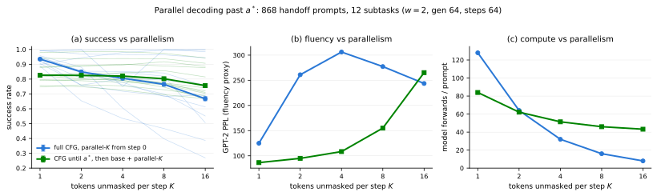
Policy 策略 |
Gate source 门控来源 |
SR 成功率 |
vs 相对 K{=}1 的 \Delta_{K} |
PPL 困惑度 |
NFE 模型前向计算次数 | |
|---|---|---|---|---|---|---|
Full CFG 全程 CFG |
– | 1 | 0.72 | – | 145 | 128 |
| 4 | 0.70 | -0.02 | 337 | 32 | ||
| 8 | 0.67 | -0.05 | 338 | 16 | ||
| 16 | 0.62 | -0.11 | 347 | 8 | ||
Handoff at 在 \hat{a}^{*} 交接 |
recorded 已记录的 \hat{a}^{*} |
1 | 0.69 | – | 131 | 113 |
| 4 | 0.68 | -0.00 | 139 | 101 | ||
| 8 | 0.68 | -0.01 | 155 | 99 | ||
| 16 | 0.66 | -0.02 | 193 | 98 |
The pooled interaction is a mixture.
The natural summary of the second license—the handoff-by- interaction, i.e. how much less parallelism costs once guidance is off—is at pooled over subtasks. That number is uninformative, and reporting it alone would be a mistake: it is the average of two populations with opposite signs whose spread is an order of magnitude larger than their mean. Handoff protects against parallelism on IFEval keyword-frequency ( ), CCG length ( ) and CCG sentiment ( )—on these subtasks retaining guidance through parallel filling is actively harmful—and hurts on the CommonGen counting family and its relatives (CommonGen : ; CCG multi: ; CommonGen : ), where guidance is still doing work that parallel base filling undoes. The sign tracks constraint geometry rather than benchmark provenance: the subtasks that lose are those whose constraint is a count over several lexical items, the multi-basin geometry of Appendix E, where independent parallel fills can satisfy each item locally while breaking the joint count. The second license is therefore reported stratified by subtask throughout, and the pooled value is a null artifact of mixture cancellation, not evidence of no effect.
The fixed-prefix test of Section 5.3 cannot locate the boundary, because it conditions on the boundary. We therefore sweep the switch position itself on fresh trajectories, with every arm identical in form—serial CFG before the gate, guidance-free unmasking after it—and a matched serial () control at every gate, so that any loss the two arms share is by construction not a cost of parallelism (Table 19).
(a) Gated parallel arms, : serial CFG to the gate, then guidance-free parallel filling (SR). (a) 门控并行分支，K{=}8：先串行使用 CFG 至门控点，再进行无引导并行填充（成功率）。 | |||||||
|---|---|---|---|---|---|---|---|
Family 任务族 |
Serial full-CFG 串行全程 CFG | ||||||
CommonGen kw CommonGen 关键词 k{=}10 |
108 | 0.18 | 0.51 | 0.75 | 0.83 | 0.86 | 0.99 |
CCG length CCG 长度 |
84 | 0.46 | 0.58 | 0.89 | 0.93 | 0.93 | 0.99 |
(b) Parallelism-specific cost: paired (points), by grid-step offset from . (b) 并行化特有代价：配对的 K{1}{-}K{8} 差（百分点），按相对 a^{*} 的网格步偏移给出。 | |||||||
Family 任务族 |
|||||||
CommonGen kw CommonGen 关键词 k{=}10 |
32 | ||||||
CCG length CCG 长度 |
32 | ||||||
The parallelism-specific cost—the paired same-gate difference between and —is measurably nonzero at the horizon and indistinguishable from zero shortly after it: on keywords it is points at the gate nearest each prompt’s and one grid step later, while on length it never exceeds points at any gate. This is the premise-level measurement that the two-hop bound calls for— is nonzero at and becomes statistically indistinguishable from zero shortly after it, so premise and conclusion of the bound are verified independently.
What the horizon does and does not locate.
Success along the gate sweep is typically monotone and saturating, and the horizon marks the beginning of the transition into the post-guidance regime rather than the plateau itself: on per-prompt horizon-aligned increments the largest single step occurs immediately at the horizon ( from one grid step before it to the horizon), after which the residual gain decays to at most per step within the following one to two gate intervals. The plateau therefore begins one to two grid steps after , not at it, and at least one subtask (IFEval no-comma) is a genuine counterexample to the aligned pattern. The two measurement disciplines that Section 5.3 states in short form, and that are enforced throughout the paper, come from this observation. First, this receipt exists only in per-prompt horizon-aligned coordinates: the unaligned pooled switch curve has no plateau at all, because averaging over a distribution of horizons smears the transition, so no plateau, onset or located-transition claim anywhere in this paper is read off an unaligned aggregate. Unaligned curves appear only where the quantity being reported is a level and the horizon enters as a distribution rather than as a located point (Figure 9), and their captions say so. Second, compute is reported descriptively as model forward evaluations; we make no claim about wall-clock behaviour and none about a net gain over existing schedulers.
(a) Success rate at gate , aligned to each
prompt’s own (offset in gate-grid units). (a) 门控位于 a^{*}{+}d 时的成功率；按每个提示词自身的 a^{*} 对齐（偏移 d 以门控网格步为单位）。 | |||||||||
|---|---|---|---|---|---|---|---|---|---|
Arm 实验分支 |
|||||||||
| 0.554 | 0.630 | 0.808 | 0.871 | 0.889 | 0.904 | 0.922 | 0.929 | 0.933 | |
| 0.558 | 0.618 | 0.791 | 0.853 | 0.880 | 0.898 | 0.916 | 0.925 | 0.931 | |
| 0.495 | 0.562 | 0.747 | 0.826 | 0.856 | 0.881 | 0.906 | 0.919 | 0.928 | |
(b) Parallelism-specific cost: paired
vs. at the same gate and prompt (SR points, mean SE over prompts). (b) 并行化特有代价：在同一提示词和门控点上，将 K 与 K{=}4 配对比较（成功率百分点；给出提示词间均值 \pm 标准误）。 | |||||||||
Arm 实验分支 |
|||||||||
(c) GPT-2 perplexity (fluency proxy, separate axis),
median over prompts. (c) GPT-2 困惑度（流畅度代理，独立评价轴），取提示词中位数。 | |||||||||
Arm 实验分支 |
|||||||||
| 56 | 51 | 53 | 57 | 60 | 61 | 63 | 63 | 64 | |
| 107 | 84 | 80 | 87 | 87 | 86 | 86 | 81 | 81 | |
| 195 | 180 | 158 | 166 | 156 | 146 | 143 | 119 | 116 | |
prompts 提示词 |
797 | 905 | 905 | 905 | 905 | 905 | 770 | 770 | 587 |
Cost closes at 代价收敛于 |
Residual (pts) 残差 R_{K}（百分点） |
||||||
|---|---|---|---|---|---|---|---|
Subtask 子任务 |
|||||||
CommonGen kw CommonGen 关键词 k{=}3 |
78 | +8.5 | +10.7 | +14.9 | |||
CommonGen kw CommonGen 关键词 k{=}4 |
80 | +6.7 | +10.1 | +14.3 | |||
CommonGen kw CommonGen 关键词 k{=}5 |
87 | +9.1 | +10.8 | +14.7 | |||
CommonGen kw CommonGen 关键词 k{=}10 |
108 | +8.9 | +11.7 | +18.2 | |||
CCG length CCG 长度 |
84 | +2.9 | +3.8 | +2.0 | |||
CCG sentiment CCG 情感 |
49 | +7.0 | +8.9 | +11.9 | |||
CCG multi CCG 多约束 |
129 | +6.1 | +7.8 | +11.7 | |||
IFEval kw-freq IFEval 关键词频率 |
58 | +4.1 | +5.2 | +4.5 | |||
IFEval letter-freq IFEval 字母频率 |
42 | +0.6 | +3.0 | +2.6 | |||
IFEval capital-freq IFEval 大写频率 |
35 | +11.0 | +13.0 | +11.5 | |||
IFEval no-comma IFEval 无逗号 |
147 | +1.4 | +1.4 | +3.3 | |||
COLLIE c07 COLLIE c07 |
8 | – | – | – | – | – | – |
COLLIE c06a COLLIE c06a |
0 | – | – | – | – | – | – |
pooled 合并 |
905 | +5.7 | +7.4 | +10.0 | |||
How the cost depends on the width.
The sweep above fixes ; widening the parallel step is a second axis, and the two licences need not move together. We therefore cross the gate with over all 13 subtasks and all prompts each ( prompts arms), decoding one serial prefix per prompt and branching every gate and width off it, so gates and widths are paired within prompt (Table 20; per-subtask breakdown in Table 21). The cost of widening, measured against the arm of the same prompt at the same gate, is graded in and decays with offset: never exceeds points anywhere from on, whereas still costs points at the horizon itself, two grid steps later, and first falls within points at . The independently drawn absolute-gate sweep replicates the columns to over paired cells.
Success and fluency separate along this axis, and wider steps separate them further. At the success cost is down to points while its perplexity is still against at ; pooled on the absolute axis the same asymmetry is visible without alignment, since at the – success spread has closed to about a point while the perplexity ratio is still , and it is only at . The horizon licenses parallel success; it does not license parallel fluency, and the two costs vanish at different places.
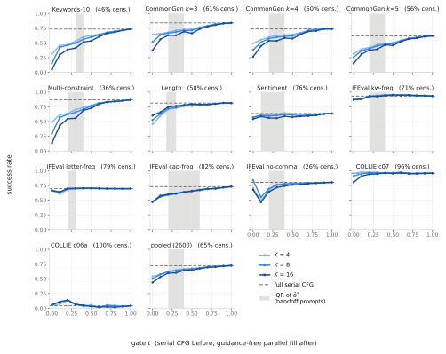
Task 任务 |
cens. 删失比例 |
|||||||||||
|---|---|---|---|---|---|---|---|---|---|---|---|---|
| % | gate (cell: ) 门控 t（单元格：K{=}4/8/16） |
serial 串行 | ||||||||||
Keywords-10 关键词-10 |
46 | 31/15/5 | 46/43/30 | 47/46/39 | 53/50/41 | 60/56/51 | 63/60/54 | 65/64/61 | 68/67/66 | 70/69/68 | 72/72/72 | 74 |
CommonGen CommonGen k3 |
61 | 64/51/37 | 66/64/56 | 68/67/63 | 72/69/63 | 73/71/69 | 74/71/66 | 77/76/74 | 79/79/78 | 82/82/80 | 83/83/83 | 84 |
CommonGen CommonGen k4 |
60 | 49/38/26 | 55/51/45 | 60/57/54 | 63/60/54 | 63/61/58 | 64/62/57 | 67/66/64 | 72/71/70 | 73/73/70 | 74/74/74 | 74 |
CommonGen CommonGen k5 |
56 | 32/26/15 | 39/37/31 | 42/40/38 | 47/45/39 | 49/47/47 | 50/49/46 | 54/54/52 | 58/58/57 | 60/59/58 | 61/61/61 | 62 |
Multi-constr. 多约束 |
36 | 49/30/13 | 62/57/43 | 64/62/55 | 70/66/56 | 74/71/69 | 78/76/73 | 82/81/80 | 84/83/83 | 84/85/84 | 85/85/85 | 87 |
Length 长度 |
58 | 45/52/60 | 59/63/66 | 71/72/75 | 73/74/76 | 76/77/78 | 77/77/80 | 77/78/79 | 78/79/79 | 80/80/80 | 82/82/82 | 81 |
Sentiment 情感 |
76 | 57/57/54 | 61/60/59 | 61/60/56 | 62/60/56 | 64/62/59 | 63/61/58 | 63/60/59 | 61/61/60 | 62/62/61 | 63/63/63 | 64 |
IFE kw-freq IFE 关键词频率 |
71 | 87/87/87 | 88/89/88 | 92/93/93 | 94/94/93 | 95/95/94 | 96/95/95 | 95/95/95 | 95/95/95 | 94/94/94 | 94/94/94 | 93 |
IFE letter IFE 字母频率 |
79 | 66/67/67 | 61/64/64 | 68/69/70 | 69/70/70 | 70/70/71 | 70/70/71 | 70/70/70 | 70/70/70 | 70/70/70 | 70/70/70 | 70 |
IFE cap-freq IFE 大写频率 |
82 | 47/47/47 | 59/56/57 | 60/59/60 | 62/61/61 | 65/63/64 | 67/66/65 | 68/67/68 | 69/69/70 | 70/71/70 | 72/72/72 | 73 |
IFE no-comma IFE 无逗号 |
26 | 71/84/68 | 49/55/47 | 67/69/64 | 75/76/72 | 78/78/74 | 79/78/76 | 79/79/77 | 80/79/78 | 80/79/79 | 80/80/80 | 80 |
COLLIE c07 COLLIE c07 |
96 | 96/91/80 | 98/95/91 | 97/97/94 | 97/96/95 | 96/96/96 | 97/96/95 | 97/97/96 | 95/96/95 | 96/95/95 | 96/96/96 | 96 |
COLLIE c06a COLLIE c06a |
100 | 5/5/6 | 7/11/11 | 13/13/14 | 7/7/6 | 4/4/5 | 6/4/3 | 1/2/2 | 5/5/2 | 5/4/2 | 4/3/3 | 4 |
pooled 合并 |
65 | 54/50/44 | 58/57/53 | 62/62/60 | 65/64/60 | 67/66/64 | 68/67/64 | 69/68/67 | 70/70/69 | 71/71/70 | 72/72/72 | 72 |
Task 任务 |
cens. 删失比例 |
|||||||||||
|---|---|---|---|---|---|---|---|---|---|---|---|---|
| % | gate (cell: ) 门控 t（单元格：K{=}4/8/16） |
serial 串行 | ||||||||||
Keywords-10 关键词-10 |
46 | 102/242/384 | 43/67/120 | 44/68/136 | 45/68/143 | 48/69/121 | 51/77/145 | 49/67/107 | 52/64/95 | 52/63/91 | 53/61/62 | 51 |
CommonGen CommonGen k3 |
61 | 105/281/693 | 59/114/273 | 54/87/199 | 53/86/214 | 55/93/176 | 59/101/240 | 55/83/160 | 58/78/138 | 55/76/136 | 53/66/66 | 49 |
CommonGen CommonGen k4 |
60 | 95/242/669 | 53/94/213 | 54/83/178 | 53/84/197 | 54/90/161 | 61/99/227 | 56/84/161 | 59/78/133 | 57/78/131 | 54/68/69 | 49 |
CommonGen CommonGen k5 |
56 | 80/201/549 | 50/88/200 | 52/81/171 | 51/84/190 | 53/89/151 | 57/95/202 | 53/80/137 | 54/71/124 | 54/74/123 | 54/67/66 | 51 |
Multi-constr. 多约束 |
36 | 184/400/811 | 71/121/248 | 66/103/217 | 60/98/222 | 61/95/175 | 64/99/210 | 61/82/145 | 61/77/121 | 59/74/120 | 56/67/67 | 54 |
Length 长度 |
58 | 354/709/2.0k | 216/314/577 | 188/221/343 | 188/221/346 | 171/234/233 | 200/255/328 | 169/211/285 | 178/202/208 | 165/185/234 | 180/188/194 | 251 |
Sentiment 情感 |
76 | 175/487/2.4k | 60/74/154 | 45/63/118 | 43/64/132 | 46/63/101 | 51/68/121 | 50/60/92 | 55/61/82 | 52/61/83 | 55/61/61 | 54 |
IFE kw-freq IFE 关键词频率 |
71 | 36/69/115 | 33/51/96 | 35/55/119 | 35/57/138 | 37/62/116 | 40/64/140 | 38/57/106 | 39/53/90 | 39/51/80 | 39/45/45 | 35 |
IFE letter IFE 字母频率 |
79 | 37/81/136 | 34/53/99 | 40/62/137 | 45/73/166 | 50/81/155 | 56/90/202 | 55/81/159 | 61/83/146 | 62/82/125 | 61/72/71 | 57 |
IFE cap-freq IFE 大写频率 |
82 | 41/100/159 | 39/60/123 | 47/68/148 | 52/81/180 | 57/94/164 | 64/101/212 | 61/91/169 | 64/87/151 | 63/83/132 | 61/74/75 | 54 |
IFE no-comma IFE 无逗号 |
26 | 38/144/175 | 35/51/99 | 48/71/156 | 56/88/201 | 65/101/198 | 73/120/248 | 72/106/208 | 76/105/179 | 77/102/156 | 73/89/89 | 67 |
COLLIE c07 COLLIE c07 |
96 | 191/556/1.1k | 119/265/702 | 112/169/404 | 93/173/485 | 70/158/352 | 74/164/500 | 62/120/288 | 70/106/232 | 61/96/203 | 62/85/82 | 55 |
COLLIE c06a COLLIE c06a |
100 | 3.1k/5.3k/8.0k | 83/195/556 | 85/171/624 | 89/245/632 | 89/252/807 | 103/273/1.1k | 121/263/819 | 152/273/627 | 178/287/509 | 190/239/241 | 155 |
pooled 合并 |
65 | 98/265/604 | 48/77/164 | 53/80/171 | 54/87/196 | 58/93/168 | 64/103/213 | 61/87/159 | 63/84/141 | 60/81/132 | 59/72/72 | 55 |
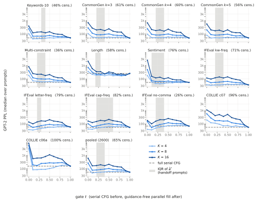
Figure 9 shows the whole grid on the absolute gate axis, one panel per subtask. It is the one view here that carries the censored prompts: the gate schedule is prompt-independent, so is not in the design and the prompts with have complete curves even though no aligned analysis can use them. Read as levels, the panels show how unevenly the width axis bites—three lines lie on top of one another for IFEval letter-frequency and COLLIE c07, and open by more than twenty points at low for Keywords-10 and the CommonGen counting family—and COLLIE c06a, censored for every one of its prompts, stays near zero at every gate and width, which is what the hopeless fate looks like from this side. The shaded band is the interquartile range of over the subtask’s handoff prompts, not a located transition; it is drawn as a band because every task-level scalar we tried fails, including the two that look most defensible. The median over all prompts is in of subtasks under censoring, and the earliest gate whose paired deficit against full serial CFG clears a non-inferiority margin lands at in of subtasks and barely moves with . That is not an artefact of those estimators: a curve here is a mixture over prompts with different horizons, and a mixture reaches parity only when its slowest component does, which is the same reason the unaligned curve has no plateau. The horizon is not recoverable from the aggregate that averages over it. Figure 10 reads the same grid on the fluency axis, where the widths converge visibly later than they do in success.
F.1 The Predicted Gate
This subsection backs Section 5.4, which quotes only the parity contrast and the two qualifications. Table 4 is the receipt; the accuracy metrics, the policy rule, the sentiment exception and the matched-budget analysis are below. The comparator discipline this leg taught us is stated once and applies to the whole block: judged against a per-subtask constant the predicted gate looks like a failure, judged against the oracle—the actual deployment question, can a cheap gate replace the one we paid rollouts for?—it does not. Both are reported here, each with the question it answers.
Success rate 成功率 |
CFG-on fraction CFG 开启比例 | ||||||
|---|---|---|---|---|---|---|---|
Constraint 约束 |
Classifier 分类器 |
Family cut 任务族切换点 |
Oracle Oracle a^{*} |
Classifier 分类器 |
Family cut 任务族切换点 |
Oracle Oracle a^{*} | |
CommonGen kw CommonGen 关键词 k{=}3 |
78 | 0.75 | 0.75 | 0.74 | 0.58 | 0.60 | 0.32 |
CommonGen kw CommonGen 关键词 k{=}4 |
80 | 0.69 | 0.69 | 0.69 | 0.57 | 0.60 | 0.36 |
CommonGen kw CommonGen 关键词 k{=}5 |
87 | 0.53 | 0.54 | 0.54 | 0.57 | 0.60 | 0.44 |
CommonGen kw CommonGen 关键词 k{=}10 |
108 | 0.62 | 0.62 | 0.62 | 0.56 | 0.60 | 0.47 |
CCG length CCG 长度 |
84 | 0.76 | 0.76 | 0.76 | 0.59 | 0.60 | 0.30 |
CCG sentiment CCG 情感 |
49 | 0.66 | 0.66 | 0.72 | 0.15 | 0.15 | 0.17 |
CCG multi CCG 多约束 |
129 | 0.82 | 0.83 | 0.82 | 0.56 | 0.60 | 0.35 |
IFEval kw-freq IFEval 关键词频率 |
58 | 0.95 | 0.96 | 0.97 | 0.39 | 0.45 | 0.18 |
IFEval letter-freq IFEval 字母频率 |
42 | 0.69 | 0.70 | 0.69 | 0.52 | 0.60 | 0.28 |
IFEval capital-freq IFEval 大写频率 |
35 | 0.71 | 0.71 | 0.70 | 0.56 | 0.60 | 0.31 |
IFEval no-comma IFEval 无逗号 |
147 | 0.79 | 0.80 | 0.78 | 0.55 | 0.60 | 0.37 |
COLLIE c07 COLLIE c07 |
8 | 0.98 | 0.98 | 0.98 | 0.07 | 0.10 | 0.07 |
COLLIE c06a COLLIE c06a |
– | 0.10 | 0.10 | 0.10 | 0.30 | 0.30 | 0.30 |
Pooled 合并 |
905 | 0.73 | 0.74 | 0.73 | 0.52 | 0.56 | 0.34 |
Design. We fit a random forest on rollout-free features of a prompt’s own recorded run (confidence and entropy channel statistics and commit-order shape), in a fate head and an ordinal head. The ordinal head regresses the horizon and bins the prediction into terciles rather than classifying the bin directly, which respects both the ordering of the bins and the noise in the labels. Training is within-subtask with grouped on prompt index, so a test prompt is never seen in training; both heads are -tree forests with a minimum leaf size of and a fixed seed. Labels come from the census, and because the recorded horizon is stable in the guidance weight over this wave, a prompt contributes its runs at all eight weights of the census grid ( from to ) to the training pool. The grouping keeps a prompt’s weight variants inside one fold. Two constants are fixed in advance and are the only tuned quantities: the fate-head confidence at which the policy may depart from the constant cut, and a shift added to the regressed horizon before binning, which biases the gate late on the grounds that releasing guidance early is the costlier error. Each gate source is then scored by reading, from the gate-by- sweep, the arm it would have selected on fresh trajectories, paired prompt by prompt: the oracle (the recorded ), the raw predictor , a deployable policy (default to a per-subtask constant cut, deviate to the upper edge of the predicted tercile only where the fate head is confident), and the family cut alone. The comparison that matters is the one against the oracle: can a cheap gate replace the one we paid rollouts for?
Finding 1: the predictor is inaccurate by every accuracy measure. Within-subtask tercile accuracy averages over the 12 subtasks with survivors against a chance rate of , and horizon MAE is –—pooled, against for a degenerate baseline that predicts zero for every prompt. Under leave-one-task-out training the pipeline collapses to , exactly chance, so the features are family-specific and the gate source must stay family-calibrated. We therefore say the predictor orders the horizon’s tercile above chance within a subtask, and never that it predicts .
Finding 2: accuracy is not what the gate needs. Read against the oracle at , the raw predictor—the same one that barely beats predicting zero—induces a gate whose success is statistically indistinguishable from the rollout-measured horizon: pooled over survivors, at forward evaluations per sequence against the oracle’s , an difference. That parity is the claim. The deployable policy scores higher still ( pooled, significant on 8 of the 12 subtasks with survivors, and the same ordering holds intention-to-treat over gated prompts), but it gates later and spends forwards, half as much again, so part of that margin is bought with guided steps rather than won by prediction. We rest the block on parity, not on the excess: what a cheap gate demonstrates is that the rollout-measured horizon can be replaced at matched cost, not that predicting it improves on it. A quantity can be worth defining, and worth measuring once, without being worth predicting precisely.
Finding 3: the exception identifies where per-prompt information is load-bearing. CCG sentiment inverts the pattern: there the policy is significantly below the oracle ( at , and negative at every ). Sentiment is precisely the overshoot family in which handoff is strictly superior to full CFG in Table 1—the family where guidance past the horizon actively hurts rather than merely failing to help. Where sustained guidance is redundant, the switch curve is flat past the horizon and any reasonable gate lands on the plateau; where it is harmful, the curve turns down, flatness fails, and the per-prompt location is what a policy must get right. This also explains what the policy is doing: it defaults to the constant cut and deviates only when confident, so most of its advantage comes from the constant, and it inherits the constant’s error exactly where the constant is wrong.
Scope, stated plainly. We are not proposing a decoder, and the comparison against the other baseline runs the other way: per-prompt gating does not beat a per-subtask constant, and gating at the recorded loses to a later constant on 10 of 12 subtasks ( pooled). That contrast does not cancel in the pool, so we quote it pooled rather than stratified. But the constant does not locate the switch better—it switches later and buys success with guided steps. It lands on the last point of the freeze grid on 9 of 13 subtasks, and read on the wider sweep that argmax is a corner: the paired increment is significantly positive in 26 of 39 subtask-by- cells and moves the argmax to the new edge in 25 of them, at a cost of to forward evaluations per sequence. Nor is the trade evadable by parallelizing harder: holding the budget fixed and pairing arms whose mean forward counts agree to within , a rule that buys extra guided steps by committing more positions per step loses success in 84 of 195 matched pairs and wins in 17. So “a later constant beats gating at ” is a statement about how many guided steps a deployment is willing to spend, not about where the boundary is. Compute is reported throughout as model forward evaluations, descriptively: we make no wall-clock claim and none of a net gain over existing schedulers. The horizon is a boundary in the committor field; nothing here proposes it as a tuned hyperparameter.
Appendix G Repair by Reopening: Design, Cells, and the Length Audit
This appendix backs the “Repair by reopening” paragraph of Section 5.3, which states its findings without effect sizes: the per-cell recovery numbers are here, as are both negative results — repair is not type-specific, and the selection hierarchy does not reproduce — and the length-matching artifact whose correction reverses the fluency reading. Section withdraws the two claims those results overturn; this section is the evidence it withdraws them on. This leg is the one place in the paper with no counterpart in the theory of Section 4: it is a descriptive characterization of the post-commitment field, not a consequence of the transport law.
Design. We separate trajectories into hopeless (the committor is born on the floor and never lifts) and collapse (it forms a peak and then breaks). Reopening is the only repair available: under absorbing unmasking a committed position is never re-decided, so in-place correction is impossible by construction (Appendix E). The intervention population is the whole census: all collapse prompts plus sampled hopeless prompts, over subtasks. Each prompt is intervened at two anchors—pre, half-way from the start to , and post, three steps past the committor peak—under two seeds, at reopened positions, with five selection signals ordered by their committor content (a restart arm reopening every committed position is run but not reported; see the table caption). Every arm resumes guided decoding over continuations; contrasts are paired within prompt and bootstrapped with prompts as clusters.
Finding 1: repair is broad, and not collapse-specific. All five selection signals beat the no-reopen control in all eight (anchor type ) cells, with every interval excluding zero (Table 3). At the pre anchor and , reopening lifts success from to on collapse and from to on hopeless: the absolute recovery is comparable across the two geometries ( against ), and it is positive in all subtasks. This overturns the double dissociation we previously reported from a -prompt single-carrier wave—failure type is not what discriminates the interventions—and the anchor gradient shrinks with it ( against at ), so the earlier “pre- repair is worth about twice post-peak repair” does not hold at scale either.
Finding 2: which positions are reopened barely matters. The selection contrast—full counterfactual committor ordering against commit confidence—is indistinguishable from zero in six of the eight cells, and the two cells that do reach significance point in opposite directions ( , confidence ahead, at the post anchor on collapse at ; , committor ahead, at the post anchor on hopeless at ). The ordering by committor content does not reproduce: the rollout-free guidance-disagreement signal ranks first at the pre anchor on collapse at (), ahead of the full committor (), and per subtask the contrast is positive in seven subtasks and negative in five. This is a stronger statement than “the cheap proxy is good enough”: at the committor and confidence orderings pick the same position only – of the time, so the signals genuinely disagree about where to intervene and recover the same amount anyway. What carries the effect is that a committed position is reopened at all, not which one. We therefore withdraw the claim that rollout is structurally irreducible here.
A measurement artifact that had to be removed first. The rollout that scores an arm draws a fixed per-step token budget computed on a full generation block, so it is blind to how many positions the arm actually reopened. For an untouched snapshot the budget matches the mask count exactly (verified on all interventions), so the control fills its sequence; a reopened snapshot carries extra masks against the same budget and ends with positions still masked, which the detokenizer deletes silently. The arm’s text is therefore not short at the tail but punctured, and the exposure is unequal by construction. We re-ran every outcome arm with the budget repaired, reusing the recorded selections; the control reproduces bit for bit (), which certifies the two runs are otherwise identical. Repairing it moves the reopen arms by on average and reverses the fluency reading entirely: reopened continuations are no less fluent than the control by GPT-2 perplexity, and often more so ( against at the pre anchor on collapse at ). The pre-registered length check this leg committed to is thus discharged, with the confound found, quantified and removed rather than merely bounded.
Appendix H Constraint Families and Success Predicates
Every predicate is deterministic and judge-free, evaluated on the terminal text ; none uses an LLM judge. For the continuous committor used by the transport estimator (Section 4.1) we replace the binary indicator by the graded family value in brackets below, since the binary predicate gives at the band edges.
Keywords and keywords_multi.
Given a required key set , each key is matched by a word-boundary, case-insensitive regular expression () against . Success requires all present, ; keywords uses small and keywords_multi uses jointly. [Graded family: fraction of present.] Prompts and key sets are drawn from CommonGen.
Length.
With source word count and a target ratio band (default ), let . Success is . [Graded family: band relaxed by .]
Sentiment.
A fixed SST-2 sentiment classifier returns ; success is for the positive target. [Graded family: thresholds .] This is the only family whose predicate is a learned classifier rather than a surface match, which is the source of its ”single stiff axis” geometry (Section 5).
Avoidance (Cognac, within-task banding leg).
A WordNet dual constraint: , where the topic and the forbidden sub-branch each expand to their WordNet leaf sets (plus plurals) and are matched as substrings in . This exclusion predicate is the non-fabricable axis used to isolate the (room) factor within a single task.
Appendix I Is Relational: Single-State Signals Do Not Decode It
The horizon is defined by comparing two continuations. The remaining guidance value is a difference of committors, and that relational character has an empirical consequence: it cannot be read off a single state. A bake-off of cheap single-state proxies (KL divergence between guided and base steps, predictive entropy, top-token confidence and margin, together with a hidden-state probe and a paired-difference probe) fails to decode : none is monotone in the true handoff across families. The estimators that do work are themselves paired: they compare two continuation policies rather than read one state. The freeze estimator of Appendix C is the expensive instance, and a truncated version of the same comparison is cheap enough to be practical: on that readout, t truncated committor selects repair positions as well as the untruncated one at roughly an eighth of its cost (Table 3). therefore report as a relational order parameter, a property of the pair (guided dynamics, base dynamics) rather than of any instantaneous of the state. The negative is scoped to the signals tested rather than asserted as impossibility, and it is informative: it rules out the confidence-st stopping rules a practitioner would reach for first, and it is why Appendix F.1 reaches for a trained predictor rather th signal. A third, interventional receipt we previously offered, namely that repair success is ordered by the committor content of the signal choosi targets, does not replicate at census scale (Appendix G); the claim therefore rests on the bake-off the structure of the definition, with no third receipt behind it.